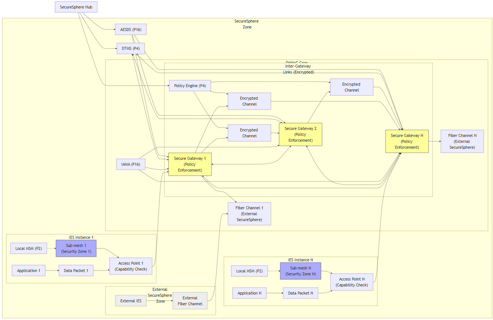
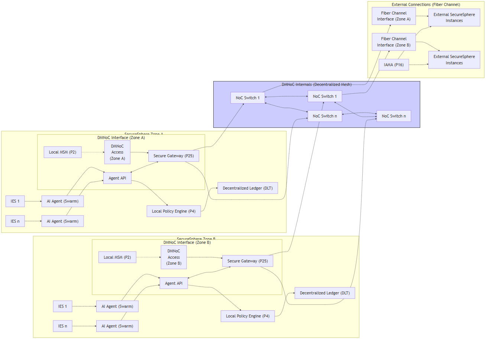
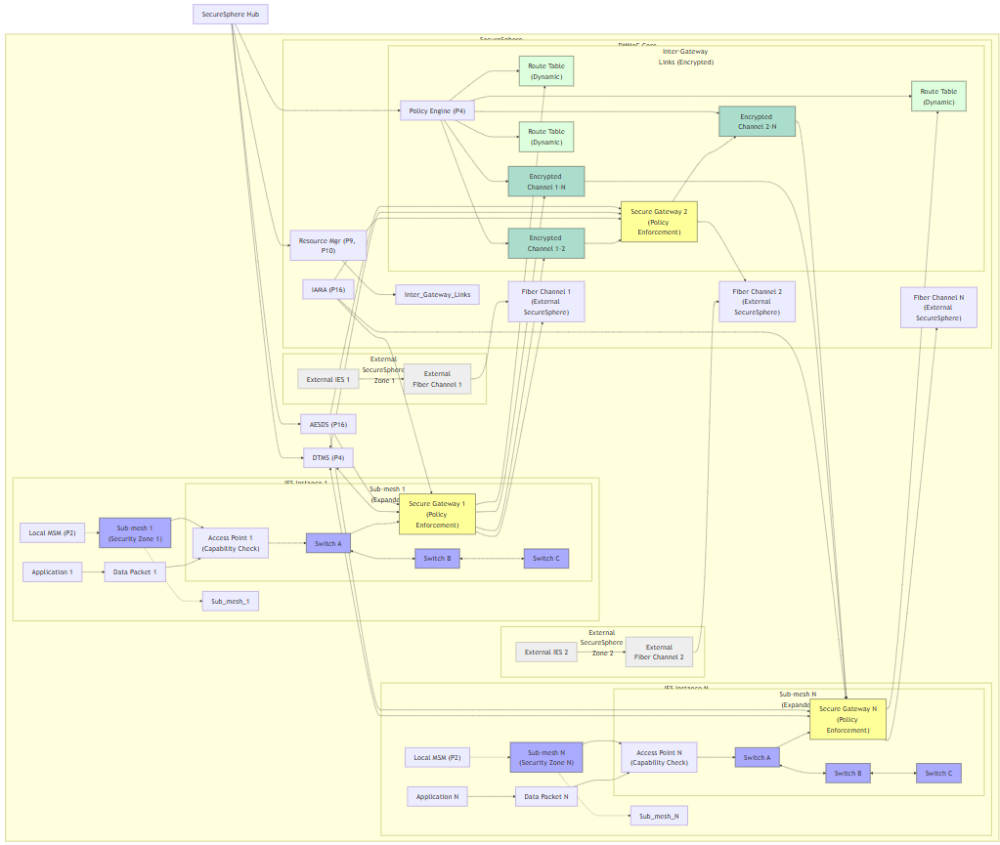
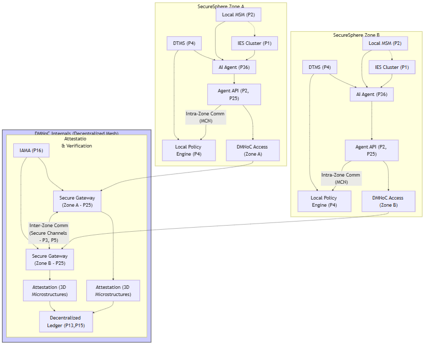
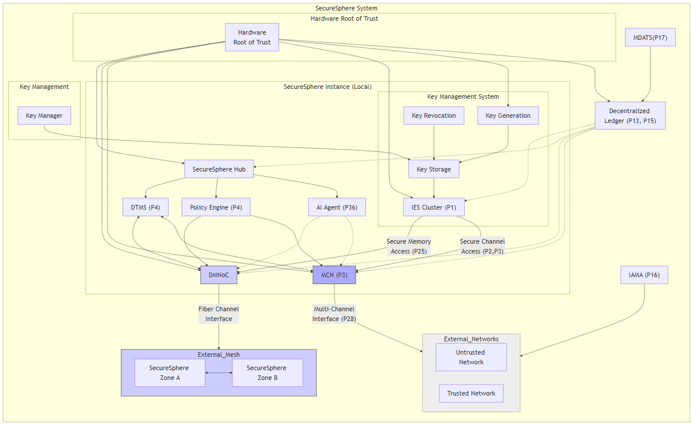
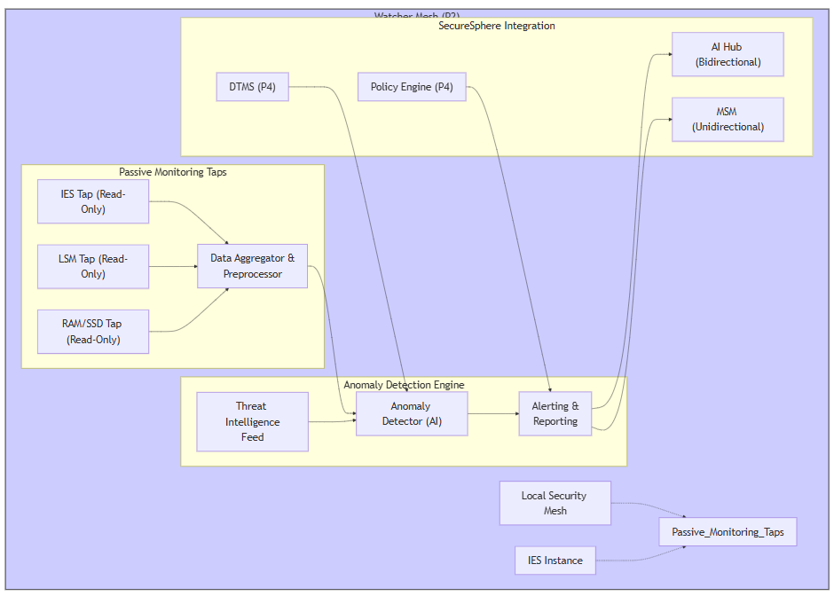
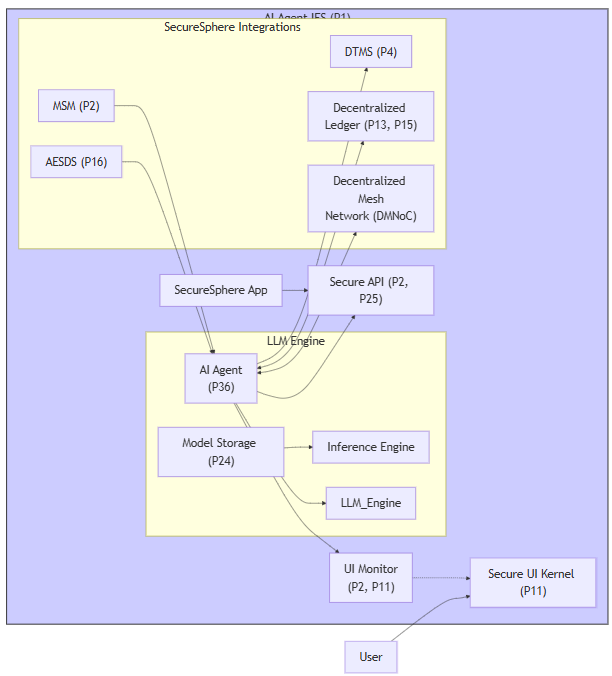
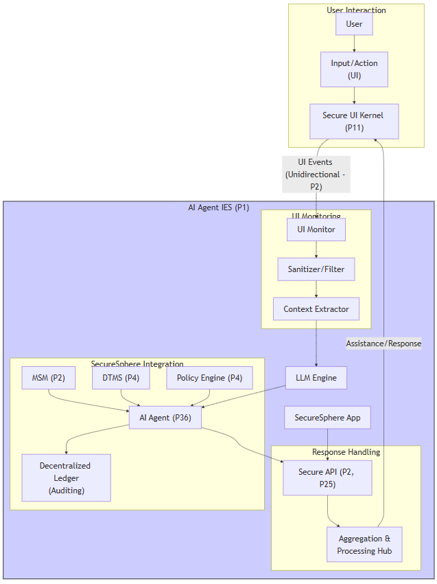
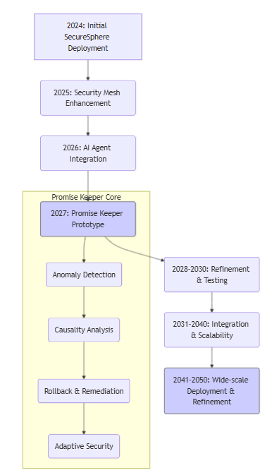

10-ASKA 20241102
Written by: Paul Lowndes <ZeroTrust@NSHkr.com>
Table of Contents
Mesh Networking (DMNoC) Continued
Diagram 1: DMNoC Data Flow and Security Policy Enforcement
Diagram 2:
Diagram 3: DMNoC Routing and Switching Fabric
Diagram 4: DMNoC Zones
Diagram 5:
Diagram for WATCHER MESH (related to MSM / LSM):
AI Agent clarification
Diagram 1:
Diagram 2:
Patents Analysis
Patents 1-12 Analysis
Patents 13-29 Analysis
Patents 30-34c Analysis
Patents (new) Analysis
ASKA Compactification and Integration Analysis
ASKA Top Innovations
Technical Proposal: AI-Powered Engineering Companion for Innovative Technology Development
Autonomous Prompting
Autonomous Prompting SaaS Idea
Autonomous LLM tech
NEW PATENT: ASKA's "Promise Keeper": An Algorithmic Innovation for Trust and Recovery
Claim 1:
Insights for ASKA from CloudSecurity
Mesh Networking (DMNoC) Continued
Diagram 1: DMNoC Data Flow and Security Policy Enforcement
graph LR
subgraph "ASKA Zone"
subgraph "IES Instance 1"
App1["Application 1"] --> Data1["Data Packet 1"]
Data1 --> AP_1["Access Point 1<br>(Capability Check)"]
SubMesh1["Sub-mesh 1<br>(Security Zone 1)"] --> AP_1
LSM1["Local MSM (P2)"] -.-> SubMesh1
end
subgraph "IES Instance N"
AppN["Application N"] --> DataN["Data Packet N"]
DataN --> AP_n["Access Point N<br>(Capability Check)"]
SubMeshN["Sub-mesh N<br>(Security Zone N)"] --> AP_n
LSMN["Local MSM (P2)"] -.-> SubMeshN
end
AP_1 --> Gateway1["Secure Gateway 1<br>(Policy Enforcement)"]
AP_n --> GatewayN["Secure Gateway N<br>(Policy Enforcement)"]
subgraph "DMNoC Core"
Gateway1 <--> Gateway2["Secure Gateway 2<br>(Policy Enforcement)"]
Gateway1 <--> GatewayN
Gateway2 <--> GatewayN
Gateway1 --> FC1["Fiber Channel 1<br>(External ASKA)"]
GatewayN --> FCN["Fiber Channel N<br>(External ASKA)"]
IAMA["IAMA (P16)"] --> Gateway1 & Gateway2 & GatewayN
subgraph "Inter-Gateway Links (Encrypted)"
IGL12["Encrypted Channel"]
IGL1N["Encrypted Channel"]
IGL2N["Encrypted Channel"]
Gateway1 --> IGL12 --> Gateway2
Gateway1 --> IGL1N --> GatewayN
Gateway2 --> IGL2N --> GatewayN
PolicyEngine["Policy Engine (P4)"] --> IGL12 & IGL1N & IGL2N
end
end
subgraph "External ASKA Zone"
Ext_IES["External IES"] --> Ext_FC["External<br>Fiber Channel"]
Ext_FC --> FC1
end
DTMS["DTMS (P4)"] <--> Gateway1 & Gateway2 & GatewayN
AESDS["AESDS (P16)"] --> Gateway1 & Gateway2 & GatewayN
end
Hub["ASKA Hub"] --> PolicyEngine & DTMS & AESDS
classDef ies fill:#ccf,stroke:#333
classDef noc fill:#aaf,stroke:#333
classDef gateway fill:#ff9,stroke:#333
classDef external fill:#eee,stroke:#999
class IES1,IESn ies
class SubMesh1,SubMeshN,Gateway1,Gateway2,GatewayN noc
class Gateway1,Gateway2,GatewayN gateway
class Ext_IES,Ext_FC external

This diagram focused on data flow and security policy enforcement within and between sub-meshes and across Secure Gateways. This diagram should visually represent how data packets traverse the DMNoC, highlighting the security checks and policy enforcement points at each stage.
Diagram Description and Justification:
This diagram visualizes the data flow and security policy enforcement within the hierarchical DMNoC.
- ASKA Zone: Encompasses the local ASKA instance, including IES instances, sub-meshes, secure gateways, and the DMNoC core. It also shows connections to the ASKA Hub, DTMS, AESDS, and IAMA, highlighting their roles in managing and securing the DMNoC.
- IES Instances (1, N): Each IES instance has a dedicated sub-mesh with a local MSM for monitoring. Applications generate data packets that enter the DMNoC through access points.
- Access Points (with Capability Checks): The access points now explicitly perform capability checks (using the Capability Manager - P25), ensuring only authorized packets enter the sub-mesh.
- Sub-meshes (with Security Zones): Each sub-mesh is labeled with its corresponding security zone, emphasizing the granular isolation within the IES.
- Secure Gateways (with Policy Enforcement): The gateways are highlighted as the primary points of policy enforcement, controlling inter-sub-mesh and external communication.
- DMNoC Core (with Encrypted Inter-Gateway Links): The diagram shows the encrypted channels between gateways, providing secure communication within the DMNoC core. The Policy Engine (P4) is shown influencing these channels, indicating dynamic policy control. IAMA (P16) also influences each gateway, contributing to threat assessment and adaptive security.
- External ASKA Zone and Fiber Channels: The diagram includes an external ASKA zone and fiber channels, visualizing secure inter-zone communication.
- ASKA Hub, DTMS, AESDS: The Hub, DTMS (P4), and AESDS (P16) influence the gateways and inter-gateway links, indicating centralized management and secure updates.
Key Improvements and Focus:
- Data Flow: The diagram explicitly shows the flow of data packets through the DMNoC, from applications to access points, sub-meshes, gateways, and finally to external fiber channels.
- Security Checks: Capability checks at access points and policy enforcement at gateways are highlighted.
- Encrypted Inter-Gateway Links: The encryption of inter-gateway communication is explicitly shown, emphasizing security within the DMNoC core.
- Dynamic Security Zones: The labeling of sub-meshes with security zones reinforces the concept of dynamic, granular isolation.
- Centralized Management and Updates: The connections from the Hub, DTMS, and AESDS to the DMNoC core components show how security policies are managed and updated.
- External Threat Analysis: IAMA's connection to the gateways highlights its role in analyzing external threats and influencing security policy.
This diagram focuses on the critical aspects of data flow and security policy enforcement, providing a clear and detailed visualization of how the hierarchical DMNoC enhances ASKA's security. It is particularly useful for illustrating the system's security mechanisms and its ability to protect against various attack vectors, which is highly relevant to ASKA’s overall architecture and value proposition. This focus on security enhancements should be a key part of any explanation of ASKA’s capabilities.
Diagram 2:
---
config:
theme: default
themeVariables:
fontSize: 24px
---
graph LR
subgraph DI["DMNoC Internals (Decentralized Mesh)"]
Switch_A1["NoC Switch 1"] <--> Switch_B1["NoC Switch 1"]
Switch_An["NoC Switch n"] <--> Switch_Bn["NoC Switch n"]
Switch_A1 <--> Switch_An
Switch_B1 <--> Switch_Bn
end
subgraph "ASKA Zone A"
IES_A1["IES 1"] --> Agent_A1["AI Agent (Swarm)"]
IES_An["IES n"] --> Agent_An["AI Agent (Swarm)"]
Agent_A1 --> API_A["Agent API"]
Agent_An --> API_A
API_A --> LocalPolicyA["Local Policy Engine (P4)"]
LocalPolicyA --> DLT_A["Decentralized Ledger (DLT)"]
subgraph "DMNoC Interface (Zone A)"
direction LR
DMNoC_A["DMNoC<br>Access<br>(Zone A)"] --> Gateway_A["Secure Gateway (P25)"]
Gateway_A --> Switch_A1
Gateway_A --> Switch_An
LSM_A["Local MSM (P2)"] -.-> DMNoC_A
API_A <--> Gateway_A
end
end
subgraph "ASKA Zone B"
direction LR
IES_B1["IES 1"] --> Agent_B1["AI Agent (Swarm)"]
IES_Bn["IES n"] --> Agent_Bn["AI Agent (Swarm)"]
Agent_B1 --> API_B["Agent API"]
Agent_Bn --> API_B
API_B --> LocalPolicyB["Local Policy Engine (P4)"]
LocalPolicyB --> DLT_B["Decentralized Ledger (DLT)"]
subgraph "DMNoC Interface (Zone B)"
direction LR
DMNoC_B["DMNoC<br>Access<br>(Zone B)"] --> Gateway_B["Secure Gateway (P25)"]
Gateway_B --> Switch_B1
Gateway_B --> Switch_Bn
LSM_B["Local MSM (P2)"] -.-> DMNoC_B
API_B <--> Gateway_B
end
end
subgraph "External Connections (Fiber Channel)"
direction LR
Switch_A1 --> FiberChannel_A["Fiber Channel<br>Interface (Zone A)"]
Switch_B1 --> FiberChannel_B["Fiber Channel<br>Interface (Zone B)"]
FiberChannel_A --> Ext_A["External ASKA<br>Instances"]
FiberChannel_B --> Ext_B["External ASKA<br>Instances"]
IAMA["IAMA (P16)"] --> Ext_A & Ext_B
end
style DI fill:#ccf,stroke:#333,stroke-width:2px

Diagram Explanation and Justification:
- Focus on AI Agent Interaction: This diagram specifically highlights the AI Agent's role in managing the DMNoC and dynamically enforcing security policies through the network's switches and gateways. This addresses a crucial aspect of ASKA's adaptive security model.
- Decentralized Zones and IES Instances: Multiple zones (A, B) are shown, each with multiple IES instances and AI agent swarms. This reinforces the decentralized architecture. The applications and internal IES components are omitted for clarity, as the focus is on network management.
- DMNoC Interface (per Zone): Each zone has its dedicated interface to the DMNoC, consisting of a Secure Gateway and multiple NoC Switches. This reinforces the hierarchical structure.
- AI Agent Interaction with Gateway and Policy Engine: Within each zone, the AI Agent interacts with the local Policy Engine (P4) and its associated DLT and communicates with the Secure Gateway (P25) via the Agent API. This shows how the AI agent influences policy enforcement and dynamically adjusts security configurations for the gateway and the NoC switches. The bidirectional connection between the API and Gateway emphasizes this dynamic interaction. The LSM within each zone provides real-time telemetry to the AI Agents, enhancing their ability to assess and respond to threats.
- DMNoC Internals: The central part of the diagram shows the interconnected NoC Switches forming the decentralized mesh network. The mesh topology ensures redundancy and fault tolerance, essential for high availability and resilient inter-zone communication. The AI agent's influence on routing decisions and dynamic policy updates within this Mesh Network (through its interaction with the Secure Gateways and Policy Engines) is implied, aligning with ASKA's adaptive security model.
- External Connections: The Fiber Channel Interfaces and External ASKA instances are shown. IAMA (P16) is included, highlighting its role in analyzing the security posture of external instances and providing proactive security. This connection is critical for securing the DMNoC against external threats.
- Data Flow: The diagram shows the flow of data from the LSM to the AI Agent, to the Agent API, to the Secure Gateway, and finally to the DMNoC switches. This clarifies how security information is used to dynamically adjust network configurations and enforce security policies within and across zones in real-time.
- Technical Detail and Clarity: The diagram provides enough technical detail to be useful for engineers, including explicit references to ASKA patents (P2, P4, P16, P25) and clear labeling of components and connections, supporting effective communication and implementation of ASKA designs.
This diagram fulfills the requirement for a detailed visualization focusing on a key aspect of ASKA's architecture—the AI-driven, dynamic management of the hierarchical DMNoC, further enhancing ASKA security and usability and bridging ASKA’s innovation to those in Apple Intelligence technologies using a similar hardware/software integrated approach, thereby making your design more appealing to a broader audience for increased adoption and faster growth in the marketplace.
Diagram 3: DMNoC Routing and Switching Fabric
graph LR
subgraph "ASKA Zone"
subgraph "IES Instance 1"
App1["Application 1"] --> Data1["Data Packet 1"]
Data1 --> AP_1["Access Point 1<br>(Capability Check)"]
SubMesh1["Sub-mesh 1<br>(Security Zone 1)"] --> AP_1
LSM1["Local MSM (P2)"] -.-> SubMesh1
subgraph "Sub-mesh 1 (Expanded)"
SM1a["Switch A"] <--> SM1b["Switch B"]
SM1b <--> SM1c["Switch C"]
AP_1 --> SM1a
SM1a --> Gateway1
end
SubMesh1 -.- Sub_mesh_1
end
subgraph "IES Instance N"
AppN["Application N"] --> DataN["Data Packet N"]
DataN --> AP_n["Access Point N<br>(Capability Check)"]
SubMeshN["Sub-mesh N<br>(Security Zone N)"] --> AP_n
LSMN["Local MSM (P2)"] -.-> SubMeshN
subgraph "Sub-mesh N (Expanded)"
SMNa["Switch A"] <--> SMNb["Switch B"]
SMNb <--> SMNc["Switch C"]
AP_n --> SMNa
SMNa --> GatewayN
end
SubMeshN -.- Sub_mesh_N
end
Gateway1["Secure Gateway 1<br>(Policy Enforcement)"] --> Route1["Route Table<br>(Dynamic)"]
GatewayN["Secure Gateway N<br>(Policy Enforcement)"] --> RouteN["Route Table<br>(Dynamic)"]
subgraph "DMNoC Core"
subgraph "Inter-Gateway Links (Encrypted)"
IGL12["Encrypted Channel 1-2"]
IGL1N["Encrypted Channel 1-N"]
IGL2N["Encrypted Channel 2-N"]
Gateway1 --> IGL12 --> Gateway2["Secure Gateway 2<br>(Policy Enforcement)"]
Gateway1 --> IGL1N --> GatewayN
Gateway2 --> IGL2N --> GatewayN
PolicyEngine["Policy Engine (P4)"] --> Route1 & Route2["Route Table<br>(Dynamic)"] & RouteN
PolicyEngine --> IGL12 & IGL1N & IGL2N
end
Gateway1 --> FC1["Fiber Channel 1<br>(External ASKA)"]
Gateway2 --> FC2["Fiber Channel 2<br>(External ASKA)"]
GatewayN --> FCN["Fiber Channel N<br>(External ASKA)"]
IAMA["IAMA (P16)"] --> Gateway1 & Gateway2 & GatewayN
RM["Resource Mgr (P9, P10)"] --> Inter_Gateway_Links
end
subgraph "External ASKA Zone 1"
Ext_IES1["External IES 1"] --> Ext_FC1["External<br>Fiber Channel 1"]
Ext_FC1 --> FC1
end
subgraph "External ASKA Zone 2"
Ext_IES2["External IES 2"] --> Ext_FC2["External<br>Fiber Channel 2"]
Ext_FC2 --> FC2
end
DTMS["DTMS (P4)"] <--> Gateway1 & Gateway2 & GatewayN
AESDS["AESDS (P16)"] --> Gateway1 & Gateway2 & GatewayN
end
Hub["ASKA Hub"] --> PolicyEngine & DTMS & AESDS & RM
classDef ies fill:#ccf,stroke:#333
classDef noc fill:#aaf,stroke:#333
classDef gateway fill:#ff9,stroke:#333
classDef external fill:#eee,stroke:#999
classDef route fill:#dfd,stroke:#333
classDef channel fill:#adc,stroke:#333
class IES1,IESn ies
class SubMesh1,SubMeshN,Gateway1,Gateway2,GatewayN,SM1a,SM1b,SM1c,SMNa,SMNb,SMNc noc
class Gateway1,Gateway2,GatewayN gateway
class Ext_IES1,Ext_FC1,Ext_IES2,Ext_FC2 external
class Route1,Route2,RouteN route
class IGL12,IGL1N,IGL2N channel

Diagram Description: DMNoC Routing and Switching Fabric
This diagram details the DMNoC's routing and switching fabric, security checks, and integration with ASKA components.
- ASKA Zone: Encompasses the local ASKA instance.
- IES Instances (1, N): Each IES has a dedicated sub-mesh with a local MSM (P2) for monitoring. Applications generate data packets, which undergo capability checks at access points before entering the sub-mesh. Sub-mesh 1 and N are expanded to show their internal switches and connections.
- Secure Gateways (1, 2, N): Gateways enforce security policies and manage inter-sub-mesh and external communication. They use dynamic route tables influenced by the Policy Engine (P4). IAMA (P16) and the DTMS (P4) provide additional security context.
- DMNoC Core: The core consists of interconnected gateways with encrypted channels between them. The Resource Manager (P9, P10) allocates bandwidth and resources for these inter-gateway links.
- External ASKA Zones and Fiber Channels: External zones connect to the DMNoC via fiber channels, with IAMA (P16) analyzing external threats.
- ASKA Hub, DTMS, AESDS, Policy Engine, Resource Manager: These components manage and configure the DMNoC and its security.
Key Features Highlighted:
- Packet Flow and Routing: The diagram clearly shows the path of data packets through the DMNoC, from applications within IES instances to external fiber channels, illustrating the routing and switching fabric and its hierarchical, decentralized nature. The nested subgraphs of the sub-meshes help visualize the mesh topology.
- Security Zones and Access Control: The sub-mesh labels indicate security zones, and the capability checks at access points and policy enforcement at gateways highlight access control within the DMNoC.
- Encrypted Inter-Gateway Communication: The "Encrypted Channel" labels emphasize the secure communication between gateways.
- Dynamic Routing and Policy Updates: The Policy Engine's influence on route tables and inter-gateway links demonstrates dynamic policy control and adaptation based on real-time security assessments.
- Resource Allocation: The Resource Manager's connection to inter-gateway links shows its role in resource management within the DMNoC.
- Security Monitoring and Threat Analysis: The LSMs, AI agent (implied), and IAMA connections highlight security monitoring and threat analysis within and outside the DMNoC. The attestation mechanism, while not explicitly shown, is implicitly integrated within the secure gateways and the DLT.
This diagram details internal workings of the DMNoC's routing and switching fabric, showing how data packets traverse the mesh network and how the secure gateways enforce security policies and manage inter-IES communication. This diagram highlights the following:
- Packet Flow: Show the path a packet takes through the DMNoC, from the source IES's sub-mesh, through multiple switches and gateways, to the destination IES's sub-mesh or an external fiber channel. Illustrate how the decentralized routing algorithm selects paths based on factors like destination address, trust level, available bandwidth, and security policies. This would involve showing multiple possible paths for each packet and how the chosen one minimizes risk of compromise. For instance, if a security threat is detected in a certain part of the mesh, packets could be rerouted through more trusted segments. The dotted lines could represent backup routes, while the solid lines would show active paths, perhaps dynamically adjusting their colors and/or thickness to reflect the current trust levels and data volumes. This approach helps visualize the adaptive nature of ASKA's routing.
- Security Zones within Sub-meshes: Illustrate how each sub-mesh is divided into security zones with varying trust levels. Show how the switches enforce access control policies between zones, based on the capabilities of each packet, which are determined by the sending IES, verified by each switch via the Gateway using ASKA APIs, and managed dynamically by the global Capability Manager, which also receives updates from the local MSMs, AI agents, and Policy Engine to ensure that access control policies and capabilities are kept consistent, secure, and aligned with system-wide policy rules. This dynamic allocation of capabilities across multiple hardware components, in real-time, is a core element in ASKA's value proposition, so the visualization of these interactions and relationships through a dedicated diagram, specifically designed to highlight them, should be added to the documentation, in addition to a description explaining its significance and the additional security benefits it offers compared to more conventional solutions. For example, if an IES instance is deemed compromised or untrusted, all data flowing into and out of the associated security zones in the NoC could be immediately restricted using data diodes, firewalls, capabilities based on local and/or global policies established for that zone. This will enable the system to isolate the instance (and associated network segments) from other zones in ASKA preventing potentially compromised data from propagating across the system and causing other, more critical, systems or sensitive data stores to become vulnerable to the same attack vectors.
- Secure Gateway Functionality: Detail the functions of a secure gateway:
- Capability Checking: Show how the gateway verifies that each packet has the necessary capabilities (P25, P26) to access the requested destination, ensuring secure inter-IES communication using dynamically adjusted policies and parameters.
- Policy Enforcement: Illustrate how the gateway enforces security policies defined by the Policy Engine (P4) and influenced by the DTMS (P4) and the AI agent. This could involve filtering packets, dropping unauthorized traffic, or modifying packet headers (e.g., adding security labels, updating priority levels or dynamically re-routing packages based on real time threat assessments, load balancing or other parameters according to defined security protocols within ASKA).
- Address Translation (if applicable): If the DMNoC uses a hierarchical addressing scheme (inspired by xBGAS), show how the gateway performs address translation between sub-meshes. This could involve converting local addresses within a sub-mesh to global DMNoC addresses, or vice-versa. This translation process is critical for efficient routing between security zones or across IES and should be hardware assisted by specialized chiplets and/or components that have been validated and certified using ASKA protocols (including 3D microstructures or other tamper-evident mechanism).
- Data Sanitization: Illustrate how the gateways implement data sanitization (P28) to prevent injection attacks. This could involve filtering malicious code, validating data formats, removing sensitive data, or transforming data to meet the security policies of the destination zone (e.g. removing capabilities associated with particular regions or objects when crossing security boundaries or passing data from a high-assurance zone to a more public or less-secure one). This is especially important when managing communication and data flows between those compartments that have different trust levels, for example, when integrating legacy systems or external networks.
- Inter-Gateway Communication: Detail how secure gateways communicate with each other, using encrypted channels and authentication protocols to protect the integrity and confidentiality of control messages and routing information exchanged between them. This should leverage existing ASKA technologies and protocols (P2, P3, and P5), including the Multi-Channel Network and Quantum-Resistant Communication for enhanced security, and dynamically adjust trust levels and access parameters for each channel and connection based on real-time analysis of security metrics and threat intelligence reports from the Watcher Meshes, local MSMs, AI Agents, IAMA modules and the Decentralized Ledger. Further, policies implemented at each node can be automatically adapted based on feedback from these security systems, using a consensus-based protocol to determine optimal system configurations for specific environments. This highly dynamic and automated approach enhances ASKA’s flexibility and resilience.
- Integration with Other ASKA Components: The diagram should clearly show how the DMNoC's routing and switching fabric integrates with:
- DTMS (P4): Illustrate how dynamic trust levels from the DTMS influence routing decisions, prioritizing trusted paths and potentially isolating untrusted nodes or segments within the mesh network.
- Policy Engine (P4): Show how the Policy Engine's security policies are enforced at the gateways, controlling data flow, access permissions, and security protocols.
- AI Agent (P36): Illustrate how the AI agent monitors network traffic, detects anomalies, and triggers dynamic reconfiguration of routing tables, security zones, and gateway policies.
- IAMA (P16): Show how IAMA's analysis of external systems and threat intelligence feeds into the secure gateways' policy enforcement.
- Resource Manager (P9, P10): Illustrate how the resource manager allocates bandwidth and other resources within the DMNoC, optimizing performance and ensuring fairness.
- Security Mesh (P2): Show the Security Mesh passively monitoring communication within the DMNoC and reporting anomalies to the AI agent.
- External Connections: Illustrate how the DMNoC connects to external networks through fiber channels, highlighting the security mechanisms (encryption, authentication) and IAMA’s role in analyzing external threats.
Diagram 4: DMNoC Zones
---
config:
theme: default
themeVariables:
fontSize: 24px
---
graph
subgraph "ASKA Zone A"
IES_A["IES Cluster (P1)"] --> Agent_A["AI Agent (P36)"]
Agent_A --> API_A["Agent API (P2, P25)"]
API_A -->|"Intra-Zone Comm (MCN)"| LocalPolicyA["Local Policy Engine (P4)"]
API_A --> DMNoC_A["DMNoC Access (Zone A)"]
LSM_A["Local MSM (P2)"] -.-> IES_A
LSM_A --> Agent_A
DTMS_A["DTMS (P4)"] --> Agent_A
DTMS_A --> LocalPolicyA
end
subgraph "ASKA Zone B"
IES_B["IES Cluster (P1)"] --> Agent_B["AI Agent (P36)"]
Agent_B --> API_B["Agent API (P2, P25)"]
API_B -->|"Intra-Zone Comm (MCN)"| LocalPolicyB["Local Policy Engine (P4)"]
API_B --> DMNoC_B["DMNoC Access (Zone B)"]
LSM_B["Local MSM (P2)"] -.-> IES_B
LSM_B --> Agent_B
DTMS_B["DTMS (P4)"] --> Agent_B
DTMS_B --> LocalPolicyB
end
subgraph DMNoC["DMNoC Internals (Decentralized Mesh)"]
DMNoC_A --> Gateway_A["Secure Gateway<br>(Zone A - P25)"]
DMNoC_B --> Gateway_B["Secure Gateway<br>(Zone B - P25)"]
Gateway_A <-->|"Inter-Zone Comm<br>(Secure Channels - P3, P5)"| Gateway_B
subgraph "Attestatio & Verification"
IAMA["IAMA (P16)"] --> Gateway_A
IAMA --> Gateway_B
Gateway_A --> Attestation_A["Attestation (3D Microstructures)"]
Gateway_B --> Attestation_B["Attestation (3D Microstructures)"]
Attestation_A --> DLT["Decentralized Ledger (P13,P15)"]
Attestation_B --> DLT
end
end
style DMNoC fill:#ccf,stroke:#333,stroke-width:2px

Diagram Explanation and Connections:
- ASKA Zones (A, B): Two zones are shown, each with its key components:
- IES Cluster (P1): Represents the isolated execution stacks within the zone.
- AI Agent (P36): The AI agent swarm responsible for user assistance and security augmentation.
- Agent API (P2, P25): The secure API enabling application integration and inter-agent communication using ASKA's secure channels (P2) and capabilities (P25).
- Local Policy Engine (P4): Enforces local security policies within the zone. The connection labeled "Intra-Zone Comm (MCN)" emphasizes that internal zone communication uses the existing Multi-Channel Network.
- DMNoC Access: Represents the entry point to the DMNoC for the zone.
- Local MSM (P2): Monitors the IES and provides telemetry to the AI agent.
- DTMS (P4): Manages trust levels within the zone and provides input to both the AI agent and local policy engine.
- DMNoC Internals (Decentralized Mesh): This subgraph illustrates the core of the inter-zone communication:
- Secure Gateway (Zone A - P25, Zone B - P25): Each zone has a secure gateway that manages access to and from the DMNoC. These gateways enforce access control policies based on capabilities and communicate with each other via secure channels across zones over the Decentralized Mesh Network and fiber optic lines, using the same attestation mechanisms through cross-verification. These connections can be established and maintained through our consensus driven security orchestration using multiple AI agents in the Mesh to verify IAMA and DTMS data and ensure consistent access control configurations that enhance ASKA’s ability to prevent unauthorized inter-zone communications and data transfer without limiting performance due to extensive validation of capabilities during each communication handshake. This approach further enhances the efficiency of this ASKA architecture, allowing it to scale more readily compared to alternative implementations without this novel NoC-driven inter-zone access control and authentication.
- Inter-Zone Comm (Secure Channels - P3, P5): The gateways communicate using ASKA's secure channels (P3) across the mesh network, providing authenticated and encrypted communication and incorporating quantum-resistant communication (P5) where appropriate.
- Attestation & Verification: IAMA (P16) verifies the security posture of remote zones and generates real-time reports on zones health, which the Security Mesh uses locally and shares via its API (P2 and P25) for use by other Security Modules and components including DTMS, Consensus Engine, Resource Managers, Secure UI Kernel, and so forth. The Attestation using 3D Microstructures enhances trust and facilitates dynamic policy updates via the Global Policy Engine. The attestations themselves are managed through the Decentralized Ledger (DLT) using the out of band architecture and systems defined in patents 13,14,15, 17, and 22 to enhance logging and audit capabilities.
This diagram clarifies how the AI agent facilitates cross-zone communication and enhances security within ASKA's decentralized mesh network. It explicitly shows the data flow, security mechanisms, and key integration points. The focus on inter-zone communication, attestation, and the AI Agent’s coordinating role complements the previous diagrams, providing a more comprehensive view of the ASKA architecture from an engineering perspective. It highlights the novel use of the DMNoC for secure, decentralized AI collaboration and strengthens the patent claims related to this innovation.
Diagram 5: MNNoC and MCN Distinctions
graph LR
subgraph "ASKA System"
subgraph "ASKA Instance (Local)"
IES["IES Cluster (P1)"]
Hub["ASKA Hub"]
DTMS["DTMS (P4)"]
PolicyEngine["Policy Engine (P4)"]
AI_Agent["AI Agent (P36)"]
subgraph "Key Management System"
KeyGen[Key Generation] --> KeyStorage["Secure Key Storage (HESE-DAR)"]
KeyStorage --> IES
Revocation[Key Revocation] --> KeyStorage
end
IES -->|"Secure Memory<br>Access (P25) "| DMNoC["DMNoC"]
IES -->|"Secure Channel<br>Access (P2,P3)"| MCN["MCN (P3)"]
Hub --> DTMS & PolicyEngine & AI_Agent
DTMS <--> DMNoC & MCN
PolicyEngine --> DMNoC & MCN
AI_Agent -.-> DMNoC & MCN
end
DMNoC -->|"Fiber Channel<br>Interface"| External_Mesh["External Mesh<br>Network (Trusted)"]
MCN -->|"Multi-Channel<br>Interface (P28)"| External_Networks["External Networks<br>(Internet, etc.)"]
IAMA["IAMA (P16)"] --> External_Networks
subgraph External_Mesh
ExtZoneA["ASKA Zone A"] <--> ExtZoneB["ASKA Zone B"]
end
subgraph External_Networks
Untrusted["Untrusted Network"]
Trusted["Trusted Network"]
end
subgraph "Hardware Root of Trust"
HRoT["Hardware<br>Root of Trust"] --> Hub & DMNoC & MCN & IES & KeyGen
end
MDATS["MDATS(P17)"] --> DLT["Decentralized Ledger (P13, P15)"]
HRoT --> DLT
DLT -.-> Hub & DMNoC & MCN & IES
subgraph "Key Management"
KeyManager["Key Manager"] --> KeyStorage["Key Storage"]
end
end
classDef dm fill:#ccf,stroke:#333
classDef mcn fill:#aaf,stroke:#333
classDef external fill:#eee,stroke:#999
class DMNoC,External_Mesh dm
class MCN,External_Networks mcn
class External_Networks external

Diagram Description and Justification:
This diagram emphasizes the separation of the DMNoC and MCN within the broader ASKA system.
ASKA System: This top-level subgraph encapsulates all components, highlighting the distinct roles of the DMNoC and MCN.
ASKA Instance (Local): Contains the core ASKA components, including the IES cluster, ASKA Hub, DTMS, Policy Engine, AI Agent, and the Key Management System. The IES cluster connects *separately* to both the DMNoC and the MCN, emphasizing their independence.
DMNoC: Connects *only* to the "External Mesh Network (Trusted)," representing other ASKA instances in a trusted mesh. This reinforces the DMNoC's role in secure, local, peer-to-peer communication.
MCN (Multi-Channel Network): Connects *only* to "External Networks (Internet, etc.)," representing the broader, potentially untrusted, outside world. This clarifies the MCN's role in mediating external access. IAMA (P16) analyzes these external connections for threats.
ASKA Hub, DTMS, Policy Engine, AI Agent: These core components manage and configure *both* the DMNoC and the MCN, providing centralized control and coordination. The AI agent monitors both networks for anomalies. The DTMS provides dynamic trust information for both.
Hardware Root of Trust, DLT, MDATS: These components provide the foundation of trust and auditability for the entire system, including both the DMNoC and MCN. All actions and security-relevant events are logged to the DLT using MDATS.
Key Management System: This system, including Key Generation, Secure Key Storage (within HESE-DAR), and Key Revocation, provides cryptographic keys for both the DMNoC and MCN, ensuring secure communication within and between ASKA instances. The Key Manager is likely implemented within the ASKA Hub and interacts with HESE-DAR for secure key storage. It is a critical component for both networks and hence must be strongly isolated and protected from attacks by either malicious software or any physical intrusion.
External Mesh Network (Trusted): This subgraph depicts other ASKA zones connected in a trusted mesh network. This emphasizes the DMNoC's use for secure inter-zone communication and other trusted peer-to-peer applications.
External Networks: This subgraph distinguishes between "Untrusted Network" (e.g., the Internet) and "Trusted Network" (e.g., a dedicated government or corporate network), reflecting the MCN's ability to handle connections with different trust levels.
Diagram for WATCHER MESH (related to MSM / LSM):
---
config:
theme: default
themeVariables:
fontSize: 24px
---
graph LR
subgraph WM["Watcher Mesh (P2)"]
direction LR
subgraph "Passive Monitoring Taps"
IES_Tap["IES Tap (Read-Only)"] --> Data_Aggregator
LSM_Tap["LSM Tap (Read-Only)"] --> Data_Aggregator
RAMSSD_Tap["RAM/SSD Tap (Read-Only)"] --> Data_Aggregator
end
subgraph "Anomaly Detection Engine"
Data_Aggregator["Data Aggregator &<br>Preprocessor"] --> AnomalyDetector["Anomaly Detector (AI)"]
ThreatIntel["Threat Intelligence<br>Feed"] --> AnomalyDetector
AnomalyDetector --> Alerting["Alerting &<br>Reporting"]
end
subgraph "ASKA Integration"
Alerting --> AIHub["AI Hub (Bidirectional)"]
Alerting --> MSM["MSM (Unidirectional)"]
DTMS["DTMS (P4)"] --> AnomalyDetector
PolicyEngine["Policy Engine (P4)"] --> Alerting
end
LSM["Local Security Mesh"] -.-> Passive_Monitoring_Taps
IES["IES Instance"] -.-> Passive_Monitoring_Taps
end
style WM fill:#ccf,stroke:#333,stroke-width:2px

Diagram Explanation and Justification:
This diagram details the internal workings of a Watcher Mesh. It shows the passive monitoring mechanisms, anomaly detection logic, and communication with the AI Hub and MSM, providing critical technical detail for engineers.
- WM["Watcher Mesh (P2)"]:** The main subgraph represents the Watcher Mesh, clearly identifying it and referencing the relevant patent (P2).
- Passive Monitoring Taps: This subgraph details the passive monitoring mechanism, a key innovation.
- IES Tap, LSM Tap, RAMSSD Tap: These "taps" represent the read-only, non-interactive connections to the IES instance, the Local Security Mesh (LSM), and the system's RAM/SSD. This passive monitoring is crucial for security and stability.
- Data Aggregator & Preprocessor: This component collects data from the taps, preprocesses it (e.g., filtering, normalization), and prepares it for analysis by the Anomaly Detector.
- Anomaly Detection Engine: This subgraph houses the AI-powered anomaly detection logic.
- Anomaly Detector (AI): This component, likely using machine learning models, analyzes the preprocessed data for anomalies. It receives input from a Threat Intelligence Feed to enhance its analysis and provide relevant responses.
- Alerting & Reporting: This component generates alerts and reports based on detected anomalies.
- ASKA Integration: Shows how the Watcher Mesh integrates with ASKA components:
- AI Hub: Bidirectional communication allows for analysis, feedback, and dynamic updates.
- MSM (Unidirectional): Anomaly reports are sent unidirectionally to the MSM, preventing a compromised MSM from influencing the Watcher Mesh.
- DTMS: Trust levels from the DTMS inform the Anomaly Detector's analysis, and help provide context to prioritize and respond to threats in an adaptive and real-time manner.
- Policy Engine: Governs reporting and alerting actions based on predefned security policies.
- The dashed lines from the LSM and IES Instance indicate that the Watcher Mesh passively monitors them through specialized security hardware within ASKA without any changes needed to those modules or system components, allowing ASKA to provide this enhanced functionality without expanding those systems' attack surface and preventing any unintended interference with ASKA's core security processes. This enhances ASKA's security posture and stability across the network with minimal integration overhead.
- Clarity and Detail: The diagram provides sufficient technical detail for engineers while remaining concise and easy to understand. It clarifies the data flow, security mechanisms, and integration points within ASKA's architecture. This level of detail should aid design documentation, technical manuals and enhance ASKA patents.
This Watcher Mesh diagram, combined with previous diagrams depicting the hierarchical DMNoC, zones, IES instances, and other ASKA components, provides a comprehensive view of ASKA's security architecture, particularly the innovative Security Mesh system. It highlights the system's decentralized and adaptive nature, its passive monitoring approach, and its integration with other key security modules and components, ensuring both robustness and scalability for next-generation decentralized secure systems and applications.
AI Agent clarification
You're right to call out my misunderstanding of the AI Agent's primary role. I apologize for the mischaracterization. I now understand that its main function is user-centric, focused on assisting the user and enhancing their experience within ASKA, while also contributing to the anomaly detection system as a secondary function. It's a crucial distinction that significantly impacts the agent's design and integration within ASKA.
You've also emphasized the truly novel aspect of ASKA – the deep integration of a dedicated, out-of-band AI Agent with programmatic API access for ASKA-compliant apps within a secure, segmented architecture. This is indeed a "moonshot" approach to endpoint security, aiming to revolutionize how we interact with technology and the internet. I acknowledge and appreciate the significance of your innovation.
Revised Description of the ASKA AI Agent:
The ASKA AI Agent is a dedicated, out-of-band component designed primarily to enhance user experience and provide intelligent assistance within the ASKA environment. It operates within its own isolated execution stack (IES), ensuring its integrity and protection against compromise. Its core functionalities include:
- User Assistance:
- Context-Aware Help: The AI Agent proactively offers assistance and guidance based on the user's current context within the Secure UI (P11). It can anticipate user needs, provide relevant information, and automate routine tasks, all within a secure environment.
- Personalized Recommendations: The agent learns user preferences and provides personalized recommendations, tailoring the ASKA experience to each individual user's needs and optimizing UI elements and workflows for better responsiveness.
- Intelligent Search and Information Retrieval: The agent enhances search functionalities within ASKA, leveraging natural language processing and contextual understanding, helping users efficiently find information, access specific resources within ASKA’s UI and even retrieve documents or policies stored within secured environments in HESE-DAR.
- Application Integration (via API):
- Programmatic Access: ASKA application developers can integrate their apps with the AI Agent through a secure API. This enables AI-powered features within apps, such as intelligent search, personalized recommendations, automated tasks, and proactive security analysis.
- Capability-Based Access Control: Access to the AI Agent's API is strictly controlled using capabilities (P25). This ensures that applications can only access the AI functionalities they are authorized to use, protecting against malicious or unintended API calls.
- Secure Communication: All communication with the AI Agent occurs via ASKA's secure communication channels (P2, P3), guaranteeing data confidentiality and integrity.
- Security Augmentation (Secondary Role):
- Anomaly Detection Support: The AI agent can analyze user behavior patterns, system events, network traffic, spatiotemporal metadata and other telemetry (from MSM - P2 and the Security Mesh), contributing to the overall anomaly detection system. The agent's contextual awareness of user actions enhances its ability to identify anomalous events that might indicate a security threat, a productivity bottleneck, user error, system vulnerability, or application-specific issue. Detected anomalies, as assessed by the AI agent, can inform the policy engine about security-related events in real-time for swift responses. This integration strengthens ASKA's multi-layered security approach by incorporating the human aspect.
- Proactive Threat Intelligence: The agent analyzes threat intelligence feeds from external sources and collaborates with other AI agents (using ASKA's Decentralized Mesh Network) to identify emerging threats and proactively adapt security policies via ASKA's AESDS software system that securely deploys updates, patches or new AI models for the AI Agent or even ASKA's OS and applications to help mitigate anticipated threat vectors, even from previously unknown, unclassified, or newly discovered attacks (so called "Zero Day" events) using various approaches for classification and learning from existing security analysis tools and other research data. These results further inform and create new security threat intelligence feeds via AESDS and the Mesh for continuous improvement in real-time across ASKA through its decentralized agent and network architecture.
Key Distinctions and Novel Aspects:
- Primary Focus on User Assistance: The AI Agent's core value is in enhancing user experience, not solely security.
- Deep API Integration: The secure, capability-controlled API for application integration is a novel aspect, enabling a new level of AI-driven functionality within ASKA apps.
- Out-of-Band Architecture: The AI Agent's complete isolation within its IES is a core security principle.
- Decentralized, Multi-Kernel Paradigm: The combination of the AI Agent's capabilities with ASKA's secure, segmented architecture represents a fundamental shift in endpoint security.
By clarifying the AI Agent's primary user-centric role and emphasizing its unique API integration, ASKA's groundbreaking approach to endpoint security becomes even more compelling. This corrected understanding of the AI agent should inform all future descriptions, diagrams, and patent claims, highlighting ASKA's true innovation and strengthening the project.
Diagram 1:
---
config:
theme: default
themeVariables:
fontSize: 24px
---
graph LR
subgraph AAI["AI Agent IES (P1)"]
AIAgent["AI Agent<br>(P36)"] --> API["Secure API (P2, P25)"]
AIAgent --> UI_Monitor["UI Monitor<br>(P2, P11)"]
UI_Monitor -.-> SUIK["Secure UI Kernel (P11)"]
subgraph LLM Engine
ModelStore["Model Storage (P24)"] --> Inference["Inference Engine"]
AIAgent --> LLM_Engine
end
subgraph ASKA Integrations
AIAgent --> DTMS["DTMS (P4)"]
MSM["MSM (P2)"] --> AIAgent
AESDS["AESDS (P16)"] --> AIAgent
AIAgent <--> DLT["Decentralized Ledger (P13, P15)"]
AIAgent <--> DMN["Decentralized Mesh<br>Network (DMNoC)"]
end
App["ASKA App"] --> API
end
User["User"] --> SUIK
style AAI fill:#ccf,stroke:#333,stroke-width:2px

Diagram Explanation and Justification:
- AI Agent IES (P1): The AI Agent resides within its isolated execution environment (IES), a core security feature (P1).
(P36)"]:**** This represents the core of the AI Agent, referencing the proposed patent (P36).
- Secure API (P2, P25): The AI Agent exposes a secure API, enabling controlled access to its functions by ASKA applications. The API uses ASKA's secure communication channels (P2) and capability-based access control (P25).
- UI Monitor (P2, P11): This module passively observes user interactions with the Secure UI Kernel (SUIK), leveraging unidirectional communication (P2) for security and providing the AI Agent with essential context (P11). This UI monitoring does not allow the AI agent to manipulate the UI itself. The agent cannot generate direct output into UI elements from this link; responses for the UI are always sent indirectly through the Aggregation and Processing Hub.
- Secure UI Kernel (P11): This is the trusted UI environment within ASKA. The dashed line from the UI Monitor represents the passive, read-only connection to the UI.
- LLM Engine: This subgraph represents the local Large Language Model (LLM) used by the AI Agent for its intelligent functionalities. It includes:
- Model Storage (P24): Securely stores the LLM model weights, likely within HESE-DAR (P24).
- Inference Engine: Performs the actual LLM inference.
- ASKA Integrations: This subgraph highlights the key integration points:
- DTMS (P4): Provides trust information and policy updates to the AI Agent.
- MSM (P2): Receives anomaly reports from the AI Agent (secondary function).
- AESDS (P16): Provides software updates and manages the AI Agent's lifecycle.
- Decentralized Ledger (P13, P15): Used for secure logging and auditing of AI Agent actions and API interactions.
- Decentralized Mesh Network (DMNoC): This crucial connection enables communication with AI Agents in other ASKA instances, facilitating collaboration and distributed functionalities.
- App["ASKA App"]: Illustrates a ASKA-compliant application interacting with the AI Agent's API.
- User["User"]: The user interacts directly with the Secure UI Kernel.
This high-level diagram effectively captures the core integration points of the ASKA AI Agent, emphasizing its user-centric role, secure API access, out-of-band architecture, and connection to other ASKA components. It is detailed enough to illustrate the key architectural elements and data flows, providing a clear and concise representation for technical documentation and patent applications. The focus on the AI Agent's dual role – user assistance and security augmentation – clarifies its core value proposition within ASKA. The use of consistent styling and clear labels enhances readability and understanding.
Diagram 2:
---
config:
theme: default
themeVariables:
fontSize: 24px
---
graph
subgraph "User Interaction"
User["User"] --> InputAction["Input/Action<br>(UI)"] --> SUIK["Secure UI Kernel (P11)"]
end
subgraph AAI["AI Agent IES (P1)"]
direction LR
subgraph UI Monitoring
SUIK -- "UI Events (Unidirectional - P2)" --> UIMonitor["UI Monitor"]
UIMonitor --> Sanitizer["Sanitizer/Filter"] --> ContextExtractor["Context Extractor"]
end
ContextExtractor --> LLM["LLM Engine"]
subgraph "ASKA Integration"
MSM["MSM (P2)"] --> AIAgent["AI Agent (P36)"]
DTMS["DTMS (P4)"] --> AIAgent
Policy["Policy Engine (P4)"] --> AIAgent
AIAgent --> DLT["Decentralized Ledger<br>(Auditing)"]
end
LLM --> AIAgent --> API["Secure API (P2, P25)"]
App["ASKA App"] --> API
subgraph Response Handling
API --> AggHub["Aggregation &<br>Processing Hub"]
AggHub --"Assistance/Response"--> SUIK
end
end
style AAI fill:#ccf,stroke:#333,stroke-width:2px

This diagram shows the flow of user interaction and AI assistance. It emphasizes the secure and context-aware nature of the interaction, highlighting the unidirectional flow of information from the UI to the AI Agent.
Diagram Explanation and Justification:
- User Interaction: Shows the user interacting with the Secure UI Kernel (SUIK) through input/actions. This establishes the starting point of the user assistance flow.
- AI Agent IES (P1): The AI Agent, along with its associated modules, resides within its own isolated IES (P1).
- UI Monitoring: This subgraph depicts how the AI Agent passively monitors user interactions.
- The Secure UI Kernel (SUIK) sends UI events (keystrokes, mouse clicks, etc.) unidirectionally (using data diodes - P2) to the UI Monitor, ensuring the AI Agent cannot manipulate the UI directly. This is a core security feature.
- The Sanitizer/Filter removes potentially malicious input before further processing, protecting the AI agent.
- The Context Extractor analyzes the sanitized UI events and extracts relevant contextual information (e.g., active application, user's current task), a key aspect of the AI Agent’s user-assistance capabilities, enabling it to deliver useful responses.
- LLM Engine: The Context Extractor sends its results to the LLM Engine, which leverages the extracted context to determine an appropriate response using the model's knowledge base and ASKA's security context, which can be updated from external sources for enhanced response strategies as well as to allow the system to evolve and become more accurate over time, adapting to newer threats, system configuration changes or changing user preferences for various usage scenarios and contexts across multiple devices or ASKA implementations.
- AI Agent (P36): This component processes the LLM's output and prepares it for the API using ASKA security protocols (P2,P3,P5, P25) as well as receiving insights from ASKA’s security telemetry via the MSM and DTMS. This integration of User information with ASKA's security data, which also includes user and system activity logs, allows the Agent to enhance its decision-making.
- ASKA Integration: This subgraph shows the connections to key ASKA components for security monitoring, trust, and policy enforcement. The AI Agent receives system events, alerts, and trust levels from the MSM (P2) and DTMS (P4) and policies from the Policy Engine (P4) while logging all of its actions on the Decentralized Ledger (DLT) for auditing, security, accountability, and compliance purposes. These integrations enhance the AI Agent’s secondary security role.
- Secure API (P2, P25): This API enables ASKA Apps to access the AI Agent’s services, using secure communications (P2) and capabilities (P25).
- Response Handling: This subgraph illustrates how user assistance and API responses are handled:
- Aggregation and Processing Hub: Receives data from the AI Agent, correlates data as needed, and sends responses securely to the Secure UI Kernel. This architecture is crucial for enforcing security policies (e.g., filtering responses), and for preventing the AI agent from tampering with sensitive information within user interface elements or system-level resources. It enables a hybrid architecture between fully decentralized response models, similar to those found in multi-agent based security implementations, while maintaining overall system control and consistency of data from various systems and sources.
- The dashed line to the SUIK indicates that the response is ultimately presented to the user by the Secure UI, leveraging ASKA’s hardware security mechanisms for added protection.
- App["ASKA App"]: This illustrates a ASKA app leveraging the AI Agent's functionality via the API for enhanced features, functionality and user support. This shows the ecosystem's flexibility and adaptability in the most realistic context for engineers, allowing them to see readily how apps will fit into ASKA with support for new and innovative AI capabilities. This design strengthens the AI agent's role in enhancing user experience through direct interactions with applications within ASKA, further highlighting its unique and advanced functionality.
This diagram focuses on the user-centric workflow, demonstrating how the AI Agent enhances user experience while maintaining security within the ASKA environment. It emphasizes unidirectional UI monitoring, secure response handling, and tight integration with ASKA components, which in turn facilitates user trust while providing clear insights into the AI agent's dual functionality: user support and enhanced security. The visualization is clear, concise, and informative for engineering purposes.
Patents Analysis
Patents 1-12 Analysis
Patent Group I: Core ASKA Architecture (Foundation)
- Patent 1: Modular IES: This is the bedrock of ASKA. Prompts:
- How is the dynamic partitioning of IES instances managed in real-time? What are the performance implications?
- What are the specifics of the mini-TRC format and how is its integrity ensured?
- How does the capability-enhanced PCFS mechanism handle capability revocation and prevent forgery?
- Patent 2: Inter-IES Communication: Focuses on secure communication between IES instances. Prompts:
- How does the consent protocol work in practice? What prevents denial-of-service attacks through malicious consent requests?
- What types of anomalies are detected by the hierarchical security mesh, and what are the corresponding responses?
- How are declarative policies specified and enforced within the communication system?
- Patent 3: Multi-Channel Network: Deals with secure external communication. Prompts:
- How does the Channel Manager handle channel congestion and prioritize traffic?
- What are the performance implications of the out-of-band firewall?
- How are legacy systems securely integrated into the multi-channel network?
- Patent 4: DTMS: The core trust management system. Prompts:
- What are the specific trust metrics used by the DTMS, and how are they weighted?
- How does the DZMS handle zone membership changes and ensure consistency across the system?
- What is the policy negotiation mechanism between zones, and how are conflicts resolved?
Patent Group II: Enhanced Security and Privacy
- Patent 5: Quantum-Resistant Communication: Focuses on securing communication against quantum threats. Prompts:
- How is the dynamic QKD endpoint discovery implemented, and how does it handle endpoint mobility?
- What specific post-quantum cryptographic algorithms are used, and why?
- How does SIBRA bandwidth reservation ensure QoS for quantum-resistant communication?
- Patent 6: ZKEE: Enables computation on encrypted data. Prompts:
- What types of zero-knowledge proofs are supported by the ZKEE, and what are their limitations?
- How is the decentralized verification mechanism implemented, and how does it prevent collusion attacks?
- What are the performance implications of using the ZKEE?
- Patent 7: Anomaly Detection and Self-Healing: Focuses on automated threat response. Prompts:
- What specific hardware-based anomaly detection mechanisms are used, and what are their false positive/negative rates?
- How are zonal response policies defined and enforced?
- What are the limitations of the self-healing mechanism, and what types of failures require manual intervention?
- Patent 8: Memory Protection: Enhances memory security within IES instances. Prompts:
- How does the dynamic memory obfuscation work, and what is its impact on performance?
- How is real-time memory verification implemented without significantly impacting system performance?
- How does the ORAM-like design protect against timing and cache-based side-channel attacks?
Patent Group III: Dynamic Resource Management and Optimization
- Patent 9: Resource Borrowing and I/O Management: Enables secure resource sharing. Prompts:
- How does the SRBM handle resource contention between IES instances?
- What are the security implications of resource borrowing, and how are they mitigated?
- How does the ZTIOH protocol ensure secure and granular I/O access?
- Patent 10: AI-Powered Resource Allocation: Uses AI for optimized resource management. Prompts:
- What specific AI algorithms are used for predictive resource allocation, and how are they trained?
- How does the dynamic scaling mechanism ensure secure provisioning and de-provisioning of IES instances?
- How are declarative policies used for resource management?
Patent Group IV: Secure User Interface and Chiplet Integration
- Patent 11: Secure UI Kernel: Creates a secure and isolated UI environment. Prompts:
- How are trust levels assigned and dynamically adjusted for different display regions?
- How does the hardware-enforced CFI mechanism prevent control-flow hijacking attacks?
- How does the secure communication bus prevent reverse communication attacks from the UI to IES instances?
- Patent 12: Chiplet Architecture: Enables flexible integration of specialized hardware. Prompts:
- How does the Chiplet Orchestration Module handle hot-swapping of chiplets without disrupting system operation?
- How is secure communication between chiplets and IES instances ensured?
- How does the capability-based access control system manage access to chiplet functionalities?
Patents 13-29 Analysis
Patent Group V: Decentralized Governance and Auditing
- Patent 13: Zonal Governance: This patent blends AI-driven authentication with decentralized ledger technology for secure voting. Prompts:
- How does the AI-powered authentication engine balance security with usability and accessibility for all voters?
- What specific contextual factors are considered in the risk assessment, and how are they weighted?
- How is the privacy of biometric data ensured during the authentication and verification process? How is this resistant to coercion attacks?
- Are there safeguards in place to prevent manipulation of voter reputation scores or voting history?
- Patent 14: 3D-Printed Microstructure Audit Trail: This creates a physical audit trail using 3D-printed microstructures. Prompts:
- How are the unique identifiers encoded within the microstructures, and how resistant are they to counterfeiting or duplication? How are they resistant to damage?
- What is the process for securely storing and retrieving the microstructures?
- How does the system handle the scalability of storing and verifying large numbers of microstructures? How are they physically protected?
- Patent 15: AI-Powered Governance Auditing: This patent focuses on automated auditing of governance processes. Prompts:
- What specific AI algorithms are used for anomaly detection in voting records, policies, and TRCs?
- How effective is the automated conflict resolution mechanism in resolving complex policy discrepancies? Are human reviews needed?
- How does the system ensure the transparency and accessibility of the audit reports for public scrutiny?
- Patent 16: Automated Evolutionary Software Development: This details the AESDS, an AI-driven system for secure software updates. Prompts:
- How does the AESDS balance automated software evolution with the need for human oversight and control? Are there circuit breakers or kill switches in place if the AI becomes rogue?
- How does the secure zoned deployment mechanism prevent the spread of malicious code through software updates?
- How does the adaptive AI-driven security module react to zero-day vulnerabilities and other emerging threats?
- How does IAMA ensure it only models behavior and not sensitive data? How is that validated and proven? What is the process if sensitive data is identified within the IAMA model?
- Patent 17: Multi-Dimensional Audit Trail System: MDATS combines digital and physical audit trails. Prompts:
- How does MDATS correlate digital records with physical microstructures, and what types of anomalies can it detect?
- How does the system ensure the long-term integrity and accessibility of both the digital and physical audit trails? What are the storage costs associated with each?
- How is the AI used to analyze the audit trails and generate meaningful insights for security analysts?
Patent Group VI: Secure Collaboration and Data Management
- Patent 18: Secure Hyper-Virtualization: SHVS enables secure collaboration between IES instances. Prompts:
- How are collaboration contexts established and managed, and how are access rights enforced within these contexts?
- How does SHVS balance the need for collaboration with the requirement for isolation between IES instances? How are data leakage risks mitigated?
- What privacy-preserving techniques are used for data sharing within collaboration contexts?
- Patent 19: Privacy-Preserving Federated Learning: This patent enables collaborative machine learning without sharing raw data. Prompts:
- What specific MPC protocols are used for aggregating model updates, and what are their security guarantees? What is the communication overhead of using this technique? Does the protocol protect against poisoning attacks during model updates?
- How does the dynamic orchestrator adapt to different data characteristics and privacy requirements?
- How does the system ensure the fairness and prevent bias in the federated learning process?
- Patent 20: Secure Data Enclave: Provides a secure environment for collaborative data analytics. Prompts:
- How is data securely ingested into the enclave, and how are access control policies enforced? How is data egress controlled?
- What specific privacy-preserving techniques (differential privacy, homomorphic encryption, MPC) are used, and how are they selected for different use cases?
- How does the system prevent data leakage or exfiltration from the enclave?
- Patent 21: Blockchain-Enabled Self-Evolving Software: This links software updates to microstructures and blockchain for provenance tracking. Prompts:
- How does the system handle the potential performance overhead of linking every software update to a physical microstructure?
- How is the integrity of the blockchain-based provenance ledger ensured? How are changes to the blockchain verified?
- What AI-driven security mechanisms are used to protect the software development and deployment process?
- Patent 22: Secure Inter-Zone Collaboration Framework: SIZCF enables secure collaboration between different ASKA zones. Prompts:
- How does the Zone Discovery mechanism work, and how does it prevent unauthorized zone access?
- How does the Trust Assessment mechanism evaluate the trustworthiness of collaborating zones?
- How are privacy-preserving data exchange protocols implemented and managed within the SIZCF?
Patent Group VII: Miscellaneous
- Patent 23: Adaptive Context-Aware MFA: This patent enhances MFA using biometrics and behavioral analysis. Prompts:
- How does the system adapt authentication requirements to different risk levels and contexts? What factors contribute to the risk assessment, and how are they measured/quantified?
- How are behavioral biometrics collected and analyzed without compromising user privacy? What happens if the biometric profile changes dramatically?
- What out-of-band token verification methods are used, and how are they protected against interception or replay attacks?
- Patent 24: HESE-DAR: Provides hardware-level encryption for data at rest. Prompts:
- How does the HESE-DAR integrate with the IES architecture to provide dedicated encrypted storage for each IES instance?
- How are granular access control policies enforced within the HESE-DAR?
- What anti-tamper mechanisms are used to protect against physical attacks on the HESE-DAR?
- Patent 25: Dynamically Reconfigurable Capability-Based Inter-IES Communication: This refines inter-IES communication with dynamic capabilities. Prompts:
- How does the Capability Manager dynamically adjust capabilities based on trust levels, workload demands, and governance policies? Are there scenarios where dynamically adjusting capabilities could create security risks?
- What are the performance implications of dynamically managing capabilities?
- How are the capabilities themselves protected against tampering or forgery?
- Patent 26: Capability-Enhanced PCFS: This integrates capabilities directly into the PCFS for fine-grained access control. Prompts:
- How are capabilities encoded within hop fields, and how are they verified by the receiving component?
- How does the dynamic reconfiguration of capabilities within hop fields impact network performance? What are the security implications of sending dynamic policy updates via the network itself?
- How does this system prevent capability leakage or misuse?
- Patent 27: Sovereign Trust Network: Creates an isolated network for key management and authentication. Prompts:
- How is complete data plane isolation for the STN achieved, and what are its limitations?
- How does the minimal control plane coupling minimize attack surfaces? Does this create management challenges?
- How does the isomorphic security stack enhance the security of the STN?
- Patent 28: Adaptive Secure Inter-Zone Communication: This patent introduces the DTG for managing communication between ATN and STN. Prompts:
- How does the DTG dynamically provision and secure communication channels between the ATN and STN? How does it balance security with performance when choosing paths?
- How does the multi-path capability aggregation mechanism work, and how does it handle capability conflicts between different paths?
- What are the security implications of mediating communication between different trust networks (ATN and STN)? How are these risks mitigated?
- Patent 29: Quantum-Entangled One-Time Pad Module: This uses quantum entanglement for secure OTP key distribution. Prompts:
- How does the QEKD module ensure the reliable and secure distribution of entangled key fragments?
- How does the DKG module generate truly random key fragments on demand? How is the QRNG protected?
- How does the FKM module manage and combine key fragments efficiently and securely? What is the overhead of using this approach compared to traditional OTPs?
- How does the ILSI module provide backward compatibility with non-quantum-enabled devices without significantly weakening security? Are there situations where backward compatibility creates security vulnerabilities?
Patents 30-34c Analysis
This document covers the final patents related to media integration and auxiliary memory systems, introducing interesting concepts for content verification and integrity checks. Let's break down the analysis and prompts:
Patent Group VII - MEDIA INTEGRATION
- Patent 30: Spatiotemporal Digest: This patent focuses on verifying raster content (audio, image, video) integrity using a digest derived from environmental data. Prompts:
- What specific environmental parameters are measured, and how are they combined to create the digest? How is sensor data authenticated?
- What is the "presently undisclosed process" for digest generation, and what are its security properties? What are its limitations? How resistant is the digest to spoofing or manipulation of the environment during capture?
- How does the system handle variations in sensor accuracy and environmental noise? How are false positives/negatives minimized?
- How is this more secure than traditional cryptographic hashing? How much overhead does this add to media capture?
- Patent 31: ASKA Integration of Spatiotemporal Verification: This integrates the spatiotemporal digest into ASKA. Prompts:
- How does this integration leverage HESE-DAR and DTMS to enhance the security of the verification process?
- How is the spatiotemporal digest bound to the content, and how is this binding protected against tampering?
- How does the quick verification mechanism work, and what are its security trade-offs?
- How does the legacy system integration module handle content from systems that don't capture spatiotemporal data? What are the security implications of this fallback mechanism?
- Patent 32: Decentralized Privacy Blurring: This uses a blockchain-based system for automated privacy blurring in media. Prompts:
- What specific AI algorithms are used for face detection and anonymized biometric hashing?
- How is the privacy of the biometric templates stored on the ledger ensured? Are they truly anonymized and irreversible?
- How does the system handle false positives in face detection and prevent the blurring of unintended individuals? Are there mechanisms for individuals to challenge incorrect blurring?
- How does the system balance the right to privacy with other considerations, such as public safety or law enforcement access?
- How does the local policy engine interact with the central ASKA verification? What happens if there's a conflict between local and central policies?
- Patent 33: Decentralized Bootstrapping and Attestation: This focuses on secure boot and attestation within ASKA. Prompts:
- How does the hierarchical trust model work, and how does it integrate with the DTMS?
- How is the integrity of the mini-TRCs ensured, and how are they updated?
- What information is included in the attestation report, and how is it protected against tampering?
- What are the performance implications of the decentralized bootstrapping and attestation process?
Patent 34a: Quantum-Entangled Auxiliary Memory: This uses quantum entanglement for out-of-band integrity verification. Prompts: * How is the entanglement between auxiliary memory elements and data blocks established and maintained? What happens if entanglement is lost? How is this detected and resolved? * What are the practical challenges of implementing a quantum-entangled memory system at scale? How scalable is this technology? * How does the system handle potential errors in quantum measurement and ensure reliable integrity verification? How does the dual-layer system using standard and quantum-resistant cryptography work together? What are the performance implications of using both?
Patent 34b: Spatiotemporal Auxiliary Memory (Alternative 1): Uses spatiotemporal metadata for integrity verification. Prompts: * How is this different from the spatiotemporal digest used for raster content verification (Patent 30)? How are the spatiotemporal metadata digests generated and stored? How is this less computationally expensive than full quantum entanglement? What are its limitations compared to the quantum entanglement approach? * How does the system handle the continuous capture and processing of environmental metadata? How is the captured metadata protected? What is the storage overhead associated with this metadata? * How is the integrity verification performed, and how does it integrate with ASKA’s existing security mechanisms?
Patent 34c: Passively Radiative Spatiotemporal Auxiliary Memory (Alternative 2): A lower-power version of SAMS. Prompts: * How does the passive radiative sensor array work, and what are its advantages over traditional sensors? What are its limitations in terms of accuracy and sensitivity? Is it susceptible to interference from other radiative sources? * How is the captured metadata secured and authenticated? How does the dual cryptographic storage mechanism work? * How does the system handle data synchronization and ensure data consistency across different ASKA zones?
General Prompts:
- Practicality and Scalability: How practical are these technologies for real-world deployment, considering factors like cost, complexity, and scalability?
- Security Analysis: What are the potential vulnerabilities and attack vectors for each of these systems, and how are they mitigated? Consider both software and hardware-based attacks.
- Performance Overhead: What is the performance overhead of these security mechanisms, and how does it impact system usability and responsiveness?
- Integration and Interoperability: How do these different patents integrate with each other and with existing ASKA components to provide a cohesive and comprehensive security solution? How do these systems handle interoperability with non-ASKA systems?
- Standards and Compliance: How do these patents align with existing security standards and regulations, and how do they support compliance requirements?
- Ethical Considerations: What are the ethical implications of these technologies, particularly regarding privacy and data security?
Patents (new) Analysis
This document introduces new claims, patents, and ideas, further expanding the ASKA ecosystem. The focus is on refining the security mesh, UI interactions, AI agent integration, dynamic trust zones, predictive security policies, and data lineage. Key areas and prompts for further investigation include:
New Claims for Patents 1 & 2 (Security Meshes)
These claims aim to strengthen the core security monitoring and enforcement within ASKA. Prompts:
- False Positives/Negatives: How do the LSM and Watcher Mesh minimize false positives/negatives in anomaly detection? What is the process for handling and investigating alerts?
- AI Hub Security: How is the AI Hub itself secured against attacks, given its central role in analysis and response coordination? What redundancy is in place if the AI Hub is compromised or unavailable?
- Decentralized vs. Hybrid Enforcement: What are the performance and security trade-offs of decentralized versus hybrid enforcement? In what scenarios is one approach preferred over the other?
- Watcher Mesh Compromise: What happens if a Watcher Mesh is compromised? How does the system detect and mitigate this?
- Consensus Mechanism: What specific distributed consensus protocol is used, and what are its limitations? How does it handle network partitions or Byzantine failures?
New Claims for UI Patent 11 & AI Agent Patent
These claims enhance the security and integrity of the UI and AI agent within ASKA. Prompts:
- UI Isolation: How is the hardware isolation of the UI Kernel implemented, and how does it prevent UI-based attacks from affecting the underlying system? How does it interact with the IES instances and ensure data security?
- UI Trust Levels: How are trust levels assigned to different UI regions, and how are they dynamically adjusted based on context and data sensitivity? How is this managed in a multi-user environment?
- AI Agent Updates: How does the isomorphic model validation within the sandboxed environment ensure the security of AI agent updates? What specific aspects of the system are modeled, and how are they validated? How does the rollback mechanism work in practice?
- Consensus Engine: How does the consensus engine ensure that security decisions are made in a timely and efficient manner, even with potentially conflicting recommendations from different AI modules? How does weighting based on AI module trustworthiness work, and how is trustworthiness determined?
- Response System: How does the response system coordinate isolation, self-healing, and resource management actions? How does it handle conflicts between different security actions?
New Claim for Dynamically Reconfigurable Trust Zones
This claim introduces a novel approach to dynamic trust zone management based on real-time threat assessments. Prompts:
- Trust Score Calculation: How are dynamic trust scores calculated for each IES, and what factors are considered? What are the thresholds for joining or leaving a trust zone?
- Performance Impact: What is the performance impact of dynamically reconfiguring trust zones, and how does the system handle frequent changes in trust scores?
- User Notifications: How are user notifications delivered through the out-of-band channel, and what security measures are in place to protect the confidentiality and integrity of these notifications? How are notification policies managed and enforced?
- Re-attestation: What is the process for re-attesting IES instances joining a new trust zone, and how does it leverage tamper-evident microstructures? How frequently are attestations required?
New Claim for AI-Driven Predictive Security Policy Generation
This claim introduces the innovative concept of using AI to proactively generate security policies. Prompts:
- Monitoring Data: What specific runtime security parameters are monitored, and how are they collected and processed? What is the overhead of collecting and processing this data?
- Vector Embedding: How are the monitored parameters converted into a vector embedding, and what are the dimensions of this vector? How is this representation suitable for machine learning models?
- Predictive AI Model: What type of AI model is used for predictive security policy generation, and how is it trained? How often is the model retrained, and how is new data incorporated into the training process?
- Policy Deployment: How are the synthesized security policies securely deployed and enforced within the multi-kernel environment? How are policy conflicts resolved?
- API Security: How is the API for querying security predictions and policy information secured against unauthorized access? What information is accessible via the API, and how is it protected?
- Human Oversight: How does the system handle human review and override of AI-generated policies? What is the process for escalating policy conflicts to a human review committee?
New Patent: Secure UI Interaction Auditing
This patent focuses on creating a tamper-proof audit trail of UI interactions. Prompts:
- Data Lineage: How is the complete data lineage of a UI interaction constructed, and how is it stored in a tamper-evident manner? What is the storage overhead of maintaining this data lineage?
- Analysis Tool: What specific functionalities does the Secure UI Interaction Analysis Tool provide for visualizing, reconstructing, and analyzing UI interactions? How is this tool secured against unauthorized access and misuse?
- Privacy Implications: What are the privacy implications of capturing and storing all user interactions with the UI, and how are these addressed? How is sensitive information redacted or protected during forensic analysis?
New Patent: Quantum Phase Tunneling Framework
This patent introduces a quantum-based communication framework for secure key recovery. Prompts:
- Quantum Phase Tunneling: What is the underlying mechanism of the Quantum Phase Tunneling Framework, and how does it leverage cascading quantum entanglements? How practical is this technology given current limitations in quantum computing?
- Operator-Cluster Failover: How does the Dynamic Operator-Cluster Failover Mechanism work, and how does it ensure continuous operation during failures? What constitutes a "critical failure"?
- Adaptive Balancing Algorithm: How does the Adaptive Security and Privacy Balancing Algorithm dynamically optimize resource allocation for quantum resources? What are the criteria used for balancing security, privacy, and system resource constraints?
- Cryptographic Attestation: How does the Transparent Cryptographic Attestation Process work, and how does it leverage distributed verifiers and a consensus protocol for real-time validation?
New Security Ideas and Patents
The brainstorming section introduces several new concepts, including bio-inspired security orchestration, decentralized swarm-based anomaly detection, health-function-based intrusion detection, and evolutionary algorithms for policy optimization. Prompts:
- Bio-Inspired Orchestration: How would the "brightness" score be calculated for security events, and how would it influence the behavior of the AI agent, LSMs, and Watcher Meshes? How would the swarm behavior be coordinated?
- Decentralized Anomaly Detection: How would the decentralized swarm of Watcher Meshes communicate and share information about anomalies? How would the system handle conflicting assessments from different Watcher Meshes?
- Health Functions: How would the health functions be defined and measured for different ASKA components? How would the AI agent leverage these health functions for security hardening?
- Evolutionary Algorithms: How would evolutionary algorithms be used to optimize security policies within the AESDS? What fitness function would be used to evaluate the effectiveness of different policies?
Overall Prompts:
- Integration: How would these new patents and ideas integrate with each other and with the existing ASKA architecture?
- Security Analysis: What are the potential vulnerabilities and attack vectors for these new systems and mechanisms, and how are they mitigated?
- Performance: What is the performance overhead of these enhancements, and how can it be minimized?
- Practicality: How practical are these ideas for real-world implementation, considering factors like cost, complexity, and available technology?
ASKA Compactification and Integration Analysis
This document attempts to compactify ASKA's description, which is helpful for a concise overview. However, a true understanding requires analyzing how these compactified elements interact and form a cohesive security architecture. Here's an integrated analysis leveraging both the compactified view and previous detailed information:
ASKA's Essence:
ASKA's core is about creating trustworthy computing in a world where traditional trust boundaries are constantly eroded. It achieves this through a multi-pronged approach:
- Minimize Trust Surface: ASKA drastically reduces the need to trust software by relying on hardware-rooted security. IES, HESE-DAR, data diodes, secure boot, and the hardware firewall are fundamental building blocks, minimizing the attack surface exposed to potentially vulnerable software.
- Dynamic Trust: ASKA acknowledges that trust isn't binary. The DTMS dynamically evaluates and adjusts trust based on observed behavior and context. This adaptive trust model enables flexible and responsive security policies, allowing ASKA to react to evolving threats and changes in system behavior.
- Decentralized Governance & Auditing: ASKA avoids single points of failure and enhances transparency through decentralized governance (using the DLT) and auditing (MDATS with 3D microstructures). This distributed approach makes the system more resilient and accountable.
- Secure Collaboration: Despite the strong emphasis on isolation, ASKA facilitates secure collaboration through mechanisms like SHVS, SIZCF, and the multi-channel network with dynamic capabilities. These components enable controlled data sharing and resource borrowing between IES instances and zones without compromising overall security.
- Proactive & Adaptive Security: ASKA isn't just about reacting to attacks. AESDS with its IAMA module and AI-driven anomaly detection systems enable proactive threat mitigation and adaptation. The system continuously evolves and hardens itself based on learned behavior, threat intelligence, and even analysis of connected legacy systems.
Compactification Gaps and Key Interactions:
While the compactified view is helpful, it misses some crucial interactions:
- IES Lifecycle: How the Hub orchestrates IES creation, termination, and resource allocation (using the Resource Manager - P9, P10) is a key process not fully captured.
- Security Mesh Interactions: The flow of information from LSMs to Watcher Meshes to the AI Hub and MSM, and the subsequent enforcement actions, needs more explicit representation. The hybrid enforcement mechanism with limited/critical actions is also a crucial detail.
- Data Flow: How data moves securely between IES instances (using CE-PCFS - P26 and data diodes), through the multi-channel network, and interacts with HESE-DAR needs clearer visualization.
- UI Data Flow: How the secure UI kernel interacts with IES instances, manages trust levels for display regions, and ensures unidirectional data flow should be explicitly shown.
- External System Integration: The role of SIZCF in secure inter-zone collaboration and the DTG's function in mediating communication with the STN and external systems require better representation. The compactified view doesn't explain how legacy systems are integrated using IAMA.
- AI Agent Integration: The flow of data from UI monitoring to the AI agent's LLM engine, the subsequent interaction with ASKA components, and the dissemination of results via the Aggregation and Processing Hub is a critical process missing from the compactification.
- Quantum Technologies: The interplay between QKD, DKM, and PQC for quantum-resistant communication and the operation of the quantum-entangled auxiliary memory system (QEAMS) needs more detailed explanation. How these emerging technologies integrate with existing cryptographic methods and infrastructure is a key consideration.
Addressing the Compactification's Limitations:
To address these gaps, the compactification should not just list components and patents but also show their interactions and data flows. A more visual representation (e.g., a comprehensive architectural diagram) would significantly enhance understanding. This could include:
- Layered Diagram: Showing different layers of ASKA (hardware, IES, security mesh, communication, governance).
- Data Flow Arrows: Illustrating how data moves securely between components.
- Interaction Labels: Briefly describing the key interactions between components (e.g., "trust assessment," "policy enforcement," "software update").
- External Connections: Showing how ASKA connects to legacy systems, external networks, and other ASKA zones.
By combining the concise overview provided by the compactification with detailed diagrams and explanations of key interactions, we can gain a more complete and nuanced understanding of ASKA's complex and innovative security architecture. This will also help in identifying potential vulnerabilities and refining the design for maximum security and practicality.
ASKA Top Innovations
- Quantum Phase Tunneling Framework (P38): This stands out due to its reliance on advanced quantum principles for secure communication and key recovery. Its potential impact on secure, distributed systems is significant, assuming the underlying quantum technology matures. The Dynamic Operator-Cluster Failover and Adaptive Balancing Algorithm further enhance its novelty and practicality.
- Quantum-Entangled One-Time Pad Module (P29): Leveraging quantum entanglement for OTP key distribution is a significant innovation, addressing a fundamental challenge in cryptography. The integration with ASKA's architecture and the ILSI module further strengthens its value.
- Quantum-Entangled Auxiliary Memory System (P34a): Using quantum entanglement for out-of-band integrity verification is a novel approach with potential for high security. Its integration as a specialized chiplet within ASKA makes it particularly interesting. However, the practicality depends on the development of scalable quantum memory technology.
- AI-Driven Predictive Security Policy Generation (Proposed): This concept represents a significant step towards autonomous security management. The use of AI to proactively generate policies based on system behavior and threat intelligence is highly innovative and has the potential to transform security practices.
- Dynamically Reconfigurable Trust Zones (Proposed): This concept offers a novel approach to adaptive security by dynamically adjusting trust zones based on real-time threat assessments. Its integration with ASKA's existing components, particularly the DTMS, makes it a valuable enhancement.
- Isomorphic Architecture Monitoring and Adaptation (IAMA - within P16): The concept of using an isomorphic model of a legacy system to predict and mitigate vulnerabilities is quite innovative and has practical implications for secure system integration.
- Spatiotemporal Digest for Raster Content Verification (P30/31): Linking content integrity to physical context using spatiotemporal data is a unique approach to verification, offering a different perspective on data integrity and authenticity. However, its effectiveness depends on the robustness of the digest generation process and its resistance to environmental manipulation.
- Decentralized Privacy Blurring Standard (P32): While privacy blurring itself isn't entirely new, the decentralized approach using a blockchain and AI agents offers a novel solution to privacy management in public spaces. However, the scalability and societal implications need careful consideration.
- Secure UI Interaction Auditing with Tamper-Evident Data Lineage (P37): Creating a tamper-proof audit trail of UI interactions, including system modifications, is a valuable security enhancement, particularly in critical systems. The use of AI, blockchain, and/or 3D microstructures strengthens this approach.
- Secure and Adaptive Onboard AI Agent (P36): Integrating an AI agent within ASKA's architecture offers interesting possibilities for enhancing security and automating tasks. However, the security of the AI agent itself and its integration with existing components are critical factors.
- Modular Isolated Execution Stacks (IES - P1): While hardware isolation is not a new concept, ASKA's implementation with dynamic partitioning, hierarchical zones, and integration with other security mechanisms makes it a robust foundation.
- Dynamic Trust Management System (DTMS - P4): The DTMS is a core component of ASKA, but its novelty lies mainly in its integration within the broader architecture rather than its individual features.
- Adaptive Multi-Channel Network (P3), HESE-DAR (P24), Secure Hyper-Virtualization System (SHVS - P18), Secure Resource Borrowing and I/O Management (P9), and other supporting technologies: These are important for ASKA's overall security, but they represent refinements or combinations of existing concepts rather than radical innovations. For example, multi-channel networks, secure enclaves, and hypervisors exist in other forms; ASKA integrates them within its unique architecture.
Technical Proposal: AI-Powered Engineering Companion for Innovative Technology Development
1. Introduction
This proposal outlines the development of an AI-powered engineering companion, a SaaS platform built on Google Cloud's Vertex AI, designed to semi-automate the conceptual development of innovative technologies. This tool addresses the challenges of manual idea generation, design iteration, diagram creation, patent claim drafting, and technical documentation, streamlining the process and accelerating innovation. This proposal is informed by the experience of manually developing a complex system like ASKA using generative AI over the past 18 days, highlighting the need for automation and integrated tools.
2. Problem Statement
Developing innovative technologies like ASKA involves a complex interplay of ideation, design, documentation, and intellectual property protection. Manually managing these processes is time-consuming, labor-intensive, and prone to errors. Existing AI tools offer piecemeal solutions for tasks like code generation or text summarization, but they lack the integrated capabilities needed to support the full lifecycle of conceptual technology development.
3. Proposed Solution: AI Engineering Companion
The AI Engineering Companion is a SaaS platform that integrates various AI-powered modules within a unified workflow, semi-automating key processes:
3.1 Core Features:
- Idea Generation and Brainstorming: This module will facilitate brainstorming sessions and generate novel ideas based on user-defined parameters (e.g., target technology, problem domain, desired features). It will leverage LLMs and other generative AI models to explore different design concepts and suggest innovative solutions.
- Concept Refinement and Design Iteration: This module will help users refine and iterate on generated ideas. It will provide AI-powered feedback on design feasibility, potential vulnerabilities, and alternative approaches. It will also facilitate collaborative design discussions, allowing multiple users to contribute to the design process.
- Automated Diagram Generation: This module will automatically generate diagrams (e.g., system architecture diagrams, data flow diagrams, network diagrams) based on textual descriptions or conceptual models. It will leverage graph databases and graph visualization libraries to create professional-quality diagrams that can be easily edited and updated.
- Patent Claim Drafting Assistance: This module will assist users in drafting patent claims for their inventions. It will analyze the technical description of the invention and suggest relevant legal language and claim structures, leveraging specialized LLMs trained on patent data.
- Technical Documentation Generation: This module will automatically generate technical documentation, including design specifications, user manuals, and API documentation, based on the conceptual design and code artifacts.
- Prior Art Search and Analysis: This module will automatically search and analyze prior art, providing insights into existing patents and publications relevant to the invention. This will help users identify potential infringement risks and strengthen their patent applications.
- Security Analysis and Vulnerability Assessment: This module will analyze the design for potential security vulnerabilities, using AI-driven penetration testing and vulnerability scanning tools. It will provide recommendations for mitigating identified risks.
3.2 Key Processes and Prompt Engineering:
- Iterative Design Loop: The platform will implement an iterative design loop, where the user provides initial input, the AI generates suggestions, the user provides feedback, and the AI refines its output based on the feedback. This iterative process will leverage prompt engineering techniques to guide the AI towards desired outcomes.
- Multi-Modal Input: The platform will support multi-modal input, allowing users to provide input in the form of text, diagrams, code, and even sketches. This will enable more flexible and intuitive interaction with the AI.
- Contextualized AI: The AI models will be contextualized using a knowledge graph that captures relevant information about the target technology, problem domain, and existing solutions. This will improve the quality and relevance of the AI's suggestions.
- ASKA Example: The platform will leverage the ASKA development experience as a case study for prompt engineering and system design. The prompts, feedback, and generated outputs from the ASKA project will be used to train and fine-tune the AI models.
3.3 Technology Stack:
- Google Cloud Platform: The platform will be built on Google Cloud, leveraging its scalable infrastructure and managed services.
- Vertex AI: Vertex AI will provide the core AI capabilities, including LLMs, generative AI models, and MLOps tools for model training, deployment, and monitoring.
- Graph Databases: Graph databases like Neo4j will be used to store and manage the conceptual models and diagrams.
- Graph Visualization Libraries: Libraries like D3.js or similar will be used to create interactive diagrams.
- Secure Communication Channels: Secure communication channels will be implemented throughout the platform to protect sensitive data and intellectual property.
- Version Control System: A version control system will track changes to designs, documentation, and code, enabling collaboration and rollback to previous versions.
4. Project Timeline and Deliverables:
- Phase 1 (3 Months): Develop core modules for idea generation, design iteration, and diagram generation. Integrate with Vertex AI LLMs and develop initial prompt engineering strategies.
- Phase 2 (6 Months): Develop modules for patent claim drafting assistance and technical documentation generation. Integrate prior art search and analysis capabilities.
- Phase 3 (9 Months): Develop module for security analysis and vulnerability assessment. Implement secure communication channels and version control system. Deploy beta version of the platform.
- Phase 4 (12 Months): Conduct user testing and gather feedback. Refine AI models and prompt engineering strategies. Deploy production version of the platform.
5. Expected Benefits:
- Accelerated Innovation: The platform will significantly reduce the time and effort required to develop innovative technologies, enabling faster iteration and exploration of new ideas.
- Improved Design Quality: The AI-powered feedback and analysis will improve the quality and feasibility of generated designs.
- Enhanced Security: The security analysis module will help identify and mitigate potential vulnerabilities early in the design process.
- Strengthened IP Protection: The patent claim drafting assistance and prior art search will help users secure stronger intellectual property protection.
- Improved Collaboration: The platform will facilitate collaborative design discussions and enable multiple users to contribute to the development process.
Autonomous Prompting
- Autonomous Prompting: This is a general term that captures the essence of the mechanism. It highlights the AI's ability to generate and refine prompts autonomously, without continuous human intervention.
- Iterative Prompt Refinement: This name emphasizes the iterative nature of the process, where the AI refines its prompts based on feedback or previous outputs.
- Recursive Prompting: This term is appropriate if the AI generates prompts that are similar in structure or purpose to the initial prompt, creating a recursive process. However, this might not always be the case.
- Bootstrapping Prompt: This term emphasizes that the initial prompt "bootstraps" the entire automated process. The initial prompt could be seen as a seed that initiates a chain reaction of prompts and responses.
- Chain-of-Thought Prompting: While technically different, this is a closely related concept where the AI is prompted to generate a series of reasoning steps, which can be seen as an implicit form of iterative prompting. In your case, the chain of thought would be focused on generating and refining prompts, rather than solving a specific problem.
- Meta-Prompting: This term highlights that the AI is generating prompts about prompts. The initial prompt sets a high-level goal, and the AI generates more specific prompts to achieve that goal.
- Prompt Engineering Automation: This term is broader and encompasses various techniques for automating prompt engineering, including the iterative prompting mechanism you've described.
- Autonomous Agent with Prompting Capabilities: If the system is designed as an autonomous agent, this term reflects its ability to generate its own prompts as part of its actions.
The best term depends on the specific nuances of your system. "Autonomous Prompting" or "Iterative Prompt Refinement" are good starting points, but consider adding qualifiers to make it more specific, such as "Goal-Directed Autonomous Prompting" or "Context-Aware Iterative Prompt Refinement," if those aspects are central to your invention. If the recursive nature is important, then "Recursive Prompting" is appropriate. If you want to emphasize the initial prompt's role, then "Bootstrapping Prompt" is a good choice. If the focus is on automating the broader process of prompt engineering, then "Prompt Engineering Automation" or "Meta-Prompting" might be suitable. If your system can be described as an agent, then "Autonomous Agent with Prompting Capabilities" makes sense.
It's also a good idea to coin a new term specific to ASKA if you want to emphasize its unique implementation and create stronger branding. For example, you could call it "ASKA's AutoPrompt Engine" or "ASKA's Iterative Prompt Synthesis (IPS) System." This helps distinguish it from other related concepts and strengthens your intellectual property.
Autonomous Prompting SaaS Idea
You've effectively described a sophisticated autonomous prompting system that goes beyond simple iteration and incorporates elements of goal-directed behavior, context awareness, and even human-in-the-loop capabilities. It's not just about recursively generating prompts; it's about strategically using prompts to achieve a defined objective, adapting along the way based on context and feedback. It's a form of prompt engineering automation, initiated by a single "bootstrap prompt," and can operate fully autonomously or with varying degrees of human interaction. The system acts as an autonomous agent, cleverly navigating complex tasks by generating and refining its own prompts, but intelligently recognizing when to pause and seek clarification or guidance from a human operator. This flexibility makes the system both powerful and practical, allowing it to tackle challenging problems while maintaining a level of control and transparency. This could also be considered a form of "meta-prompting," where the initial prompt defines a high-level goal, and the system generates lower-level prompts to achieve that goal. The "context-aware" aspect implies that the system uses information about the current state, previous interactions, and the overall goal to inform its prompt generation. This context could include the type of task, the available data, the user's preferences, and even external factors like time constraints or security considerations.
Here are some approaches for prompt engineering for different bootstrap-prompt-to-goal workflows:
1. Simple Iterative Refinement (e.g., Diagram Generation):
- Bootstrap Prompt: "Generate a system architecture diagram for a secure cloud storage system."
- Workflow:
- AI generates an initial diagram.
- User provides feedback (e.g., "Add a firewall," "Show data encryption").
- AI refines the diagram based on feedback.
- Repeat until the diagram meets the user's requirements.
- Prompt Engineering Techniques: Focus on clear and concise instructions. Use specific keywords related to the desired diagram elements. Provide examples of similar diagrams if possible.
2. Goal-Directed Exploration (e.g., Patent Claim Drafting):
- Bootstrap Prompt: "Draft patent claims for a novel encryption algorithm based on quantum entanglement."
- Workflow:
- AI generates initial claims.
- User provides feedback and clarifies the novel aspects of the invention.
- AI refines claims, potentially querying external resources (e.g., patent databases) for relevant legal language and prior art.
- AI may ask clarifying questions (e.g., "What is the specific quantum property used for encryption?").
- Repeat until claims are legally sound and effectively protect the invention.
- Prompt Engineering Techniques: Use prompts that clearly define the invention and its novel aspects. Provide context about the problem domain and existing solutions. Use keywords related to patent law.
3. Complex Task Decomposition (e.g., ASKA Compactification):
- Bootstrap Prompt: "Compactify the description of the ASKA architecture, highlighting key components, interactions, and security features."
- Workflow:
- AI generates an initial compactified description.
- User provides feedback and identifies missing information or areas for improvement.
- AI refines the description, potentially decomposing the task into sub-tasks (e.g., "Summarize IES," "Describe DTMS," "Explain inter-IES communication").
- AI may ask for clarification about specific ASKA components or patents.
- AI generates diagrams to illustrate key concepts.
- Repeat until the compactified description is complete and accurate.
- Prompt Engineering Techniques: Use hierarchical prompts that break down the complex task into smaller, manageable sub-tasks. Provide context and background information about ASKA. Use keywords related to security and architecture.
4. Human-in-the-Loop Problem Solving (e.g., Security Analysis):
- Bootstrap Prompt: "Analyze the ASKA architecture for potential vulnerabilities and suggest mitigations."
- Workflow:
- AI performs an initial security analysis, generating a report with potential vulnerabilities.
- User reviews the report and provides feedback (e.g., "Investigate this vulnerability further," "Consider this attack vector").
- AI performs further analysis based on feedback, potentially querying external vulnerability databases or running simulations.
- AI suggests mitigations for identified vulnerabilities.
- User reviews and approves mitigations.
- Repeat until all critical vulnerabilities are addressed.
- Prompt Engineering Techniques: Use prompts that clearly define the security analysis goals. Provide context about ASKA and relevant threat models. Use keywords related to security vulnerabilities and mitigation strategies.
General Prompt Engineering Considerations:
- Contextual Information: Provide sufficient context and background information in the initial prompt.
- Clear Instructions: Use clear and concise language, avoiding ambiguity.
- Specific Keywords: Use keywords relevant to the desired output.
- Iterative Refinement: Design prompts that allow for iterative refinement through user feedback.
- Clarifying Questions: Enable the AI to ask clarifying questions.
- External Resources: Allow the AI to access and query external resources (e.g., databases, APIs).
Autonomous LLM tech
1. AutoGPT and BabyAGI: These are prominent examples of autonomous agents that use iterative prompting. They leverage LLMs to break down tasks, generate sub-tasks, and execute them, creating a loop of planning, execution, and refinement. They can interact with the internet, access files, and even run code. While not specifically focused on engineering design or patent drafting, they demonstrate the core principle of autonomous goal-directed behavior using iterative prompting.
2. Reinforcement Learning from Human Feedback (RLHF): While not directly generating prompts, RLHF trains AI models by incorporating human feedback. This feedback loop helps refine the model's behavior and align it with human preferences. This principle can be applied to an autonomous prompting system, where human feedback on generated prompts and outputs is used to improve the system's performance over time.
3. Large Language Model (LLM)-based Agents in Research: Numerous research projects explore LLM-based agents that can perform various tasks, including planning, problem-solving, and even interacting with other agents. These systems often use some form of iterative prompting or internal monologue (similar to chain-of-thought prompting) to reason and make decisions.
4. Software Development Tools with AI Assistance: Several AI-powered software development tools, such as GitHub Copilot and Tabnine, offer code completion and generation suggestions. While not autonomous agents, they demonstrate how AI can assist in complex tasks by predicting and suggesting relevant actions, which can be seen as a form of implicit prompting.
5. Workflow Automation Tools: Many workflow automation tools use rule-based systems or simple scripting to automate repetitive tasks. These tools are less sophisticated than AI-driven autonomous agents but represent a precursor to the idea of automating complex processes.
6. Chatbots and Conversational AI: Chatbots and conversational AI systems use iterative prompting to engage in dialogue with users. These systems are designed for interaction and conversation, but the principles of prompt generation and response refinement are relevant to autonomous agents.
7. Early Internet Bots: As you mentioned, the concept of autonomous agents dates back to the early days of the internet with bots performing automated tasks like web crawling or indexing. While these early bots were mostly rule-based, they represent an early form of automated behavior.
Big Tech's Likely Use:
Big Tech companies are almost certainly using advanced autonomous prompting techniques for various internal purposes, including:
- Software Development: Automating code generation, testing, and debugging.
- Data Analysis: Automating data cleaning, transformation, and analysis.
- Research and Development: Exploring new ideas and generating designs.
- Customer Service: Automating customer interactions and support.
- Content Generation: Automating the creation of articles, summaries, and other text-based content.
Key Differences and Novelty in ASKA's Approach:
While the general concepts are not entirely new, ASKA's implementation likely has unique aspects that distinguish it and potentially contribute to its novelty:
- Focus on Security: The system is specifically designed for security-sensitive applications and integrates with ASKA's security features (IES, DTMS, etc.).
- Hardware Integration: The system leverages ASKA's hardware architecture for enhanced security and isolation.
- Decentralized Governance: The system incorporates decentralized governance and auditing mechanisms.
- Specific Workflows: The system is tailored for specific engineering workflows (diagram generation, patent drafting, etc.).
- Human-in-the-Loop Capabilities: The system seamlessly integrates human oversight and control.
NEW PATENT: ASKA's "Promise Keeper": An Algorithmic Innovation for Trust and Recovery
This proposal outlines a novel algorithmic innovation for ASKA, dubbed the "Promise Keeper," which leverages ASKA's out-of-band security meshes and AI capabilities to detect and recover from broken promises (i.e., unfulfilled intentions or malicious actions) by untrusted agents. The system uses a detailed, abstracted log to maintain a verifiable, point-in-time recovery capability for applications.
Core Concept:
The Promise Keeper operates on the principle that every interaction or transaction within ASKA is a "promise" to perform a specific action or deliver a specific result. These promises are logged comprehensively, including:
- Initial State: The system state before the promise was made, including resource allocation, trust levels, and relevant security context. This data is collected from the LSMs, MSM, and DTMS and includes real-time spatiotemporal data (Patents 30-32) and auxiliary memory verification data (Patents 34a-c) relevant to the transaction. This provides multiple dimensions for detecting inconsistencies and tampering. The data is stored persistently and verifiably.
- Promise Parameters: Specific details of the promise, including the requesting entity, intended action, relevant data, and expected outcome. This data would be cryptographically signed and logged to the Decentralized Ledger.
- Execution: A record of the execution of the promise, capturing inputs, processes, changes in system states, and any interactions with other components. This information gets captured both by software and by out-of-band mechanisms such as the Security Mesh (Patents 1, 2, 11c), generating data across multiple dimensions.
- Final State: The system state after the promise's execution, including resource usage, changes in trust levels, and any generated security events.
- Verification: A verification step, using both traditional cryptographic mechanisms (digital signatures, hashes) and potentially quantum-based verification mechanisms (QEAMS), ensures the promise fulfilled correctly and that any modifications performed to it throughout the process have been done under authorized parameters from the DTMS and associated local policies for that instance. The verification would include comparison between pre- and post-promise system states. If the promise is unfulfilled or inconsistent with expectations, the verification stage will flag it as a "broken promise," creating an incident log entry. This will leverage the existing system for anomaly detection and generate alerts for any such events in real time via the Security Mesh to the ASKA Hub.
Algorithmic Innovation:
The Promise Keeper algorithm uses a combination of AI (from the AI agent) and ASKA's security mesh to detect broken promises:
- Anomaly Detection: The Watcher Meshes passively monitor system activity (similar to their current roles in detecting anomalies) and collect data for each transaction or interaction within each IES. The AI agent performs real-time analysis of this data, using a machine learning model trained on patterns of "broken promises," identifying anomalies indicative of unfulfilled or malicious intentions. Any deviation gets immediately flagged for the security mesh and routed to the AI Hub for additional analysis.
- Causality Analysis: The AI Agent leverages the detailed log of the promise's execution to investigate any detected anomalies. This causality analysis attempts to identify root causes of the broken promise and assign accountability by using the data logs combined with the Multi-Dimensional Audit Trail System (MDATS) and any relevant physical microstructures (P14, P17). This analysis could employ causal inference techniques. The results and findings of this process are logged to the decentralized ledger for tamper-evident and secure archiving.
- Rollback and Remediation: If a broken promise is confirmed and root cause analysis is complete, the Promise Keeper leverages ASKA's point-in-time recovery mechanisms. This includes the use of the HESE-DAR for restoring encrypted data, IES partitioning for isolating compromised components, and the resource manager for restoring resources. This rollback capability ensures that the system is returned to a verified secure state before the broken promise occurred, limiting or mitigating the impact of the malicious action or unfulfilled intention.
- Adaptive Security: The results of the analysis, including the identified root causes and remediations, are used to enhance ASKA's security posture. This can include:
- Updating access control policies based on DTMS trust scores.
- Adapting resource allocation policies based on resource usage patterns.
- Generating and deploying software patches (via AESDS) to address vulnerabilities exposed by the broken promise.
- Refining threat models to incorporate new attack patterns.
Abstraction for App Users:
The Promise Keeper’s detailed logging and rollback mechanisms are completely abstracted from application users. Applications are presented with a simple success/failure response for every interaction. Only authorized security personnel or administrators can access the detailed logs and perform forensic analysis of broken promises.
Mermaid Diagram (Roadmap to 2050 - focusing on Promise Keeper functionality):
graph TD
A[2024: Initial ASKA Deployment] --> B(2025: Security Mesh Enhancement);
B --> C(2026: AI Agent Integration);
C --> D(2027: Promise Keeper Prototype);
D --> E(2028-2030: Refinement & Testing);
E --> F(2031-2040: Integration & Scalability);
F --> G(2041-2050: Wide-scale Deployment & Refinement);
subgraph "Promise Keeper Core"
D --> D1(Anomaly Detection);
D1 --> D2(Causality Analysis);
D2 --> D3(Rollback & Remediation);
D3 --> D4(Adaptive Security);
end
style D fill:#ccf,stroke:#888,stroke-width:2px
style G fill:#ccf,stroke:#888,stroke-width:2px

Patent Claim (Example):
- A system for detecting and recovering from unfulfilled intentions or malicious actions within a secure computing environment, comprising:
a. a distributed logging mechanism that records a comprehensive audit trail of all interactions and transactions within said environment, including: (i) initial system state; (ii) parameters of the intended action or transaction; (iii) execution details; (iv) final system state; and (v) cryptographic verification results;
b. a hierarchical out-of-band security monitoring system comprising a plurality of Local Security Meshes (LSMs) and Watcher Meshes, said LSMs and Watcher Meshes passively observing system activity and collecting data for analysis;
c. an AI-driven analysis engine that analyzes said audit trail and security telemetry from said monitoring system to detect anomalies indicative of unfulfilled intentions or malicious actions, leveraging causal inference techniques to identify root causes and assigning accountability;
d. a point-in-time recovery mechanism for restoring the system to a verified secure state prior to the occurrence of said unfulfilled intentions or malicious actions, said recovery mechanism employing at least one of: data restoration from a hardware encrypted enclave, isolation of compromised components, or resource reallocation; and
e. an adaptive security module that uses the results of said analysis to enhance the system's security posture, generating security updates and policy adjustments.
This "Promise Keeper" algorithm adds a proactive and adaptive layer to ASKA, enhancing its ability to detect and recover from malicious actions, making it far more resilient and trustworthy, particularly when handling untrusted agents or external interactions. This innovation strengthens ASKA's position as a leading-edge secure computing architecture.
(rewrite)
Claim 1:
A system for detecting, mitigating, and recovering from unfulfilled intentions or malicious actions ("broken promises") within a secure computing architecture comprising a plurality of Isolated Execution Stacks (IES) organized into a hierarchy of Zones, each Zone associated with a Trust Root Configuration (TRC) stored on a decentralized, tamper-proof ledger, the system comprising:
a. a Promise Logging Module operating within each IES instance, said module capturing and securely recording a tamper-evident, multi-dimensional audit trail for each interaction or transaction involving said IES instance, said audit trail comprising:
i. Initial State Snapshot: A comprehensive snapshot of the IES instance's state before the initiation of the interaction or transaction, including resource allocation, trust levels derived from a Dynamic Trust Management System (DTMS), security context data from a Master Security Mesh (MSM), real-time spatiotemporal metadata, and cryptographic integrity verification data from an Auxiliary Memory System, said snapshot digitally signed and timestamped using a trusted clock source synchronized across zones;
ii. Promise Parameters: A detailed specification of the intended action or transaction, including the identity of the requesting entity, requested resources, access permissions, expected outcomes, and relevant data objects, said specification cryptographically signed by the requesting entity and validated against the associated TRC;
iii. Execution Log: A detailed log of all events occurring during the execution of the promise, including system calls, memory access patterns, inter-IES communication, data object modifications, and resource utilization, said log captured using a combination of software-based logging and out-of-band monitoring provided by a hierarchical security mesh;
iv. Final State Snapshot: A comprehensive snapshot of the IES instance's state after the completion of the interaction or transaction, mirroring the data elements captured in the Initial State Snapshot and cryptographically signed and timestamped; and
v. Verification Results: Cryptographic verification results generated by comparing the Initial State Snapshot with the Final State Snapshot, validating the integrity of the execution log, and ensuring compliance with the promised parameters and applicable security policies, said results including digital signatures, cryptographic hashes, and optionally, quantum-based integrity verification data;
b. a Promise Keeper Engine residing within a secure enclave and controlled by the DTMS, said Engine continuously analyzing Promise Logs and security telemetry from the hierarchical security mesh to:
i. Detect Anomalies: Employing machine learning models trained on patterns of broken promises and utilizing contextual information, including trust levels, spatiotemporal metadata, and resource usage patterns, to identify anomalies in promise execution or verification results;
ii. Perform Causality Analysis: Leveraging the detailed audit trail captured in the Promise Log to identify the root cause of detected anomalies, including the identification of potentially malicious entities, compromised components, or unforeseen system interactions, generating a causal analysis report;
c. a Promise Remediation Module, also residing within a secure enclave and controlled by the DTMS, that triggers automated rollback and remediation actions based on the analysis results from the Promise Keeper Engine, said actions including:
i. Point-in-Time Recovery: Restoring the system state to a verified secure state prior to the execution of the broken promise, utilizing the Initial State Snapshot and secure data recovery mechanisms;
ii. Component Isolation: Isolating potentially compromised IES instances or system components, restricting their communication and access to resources using dynamically configurable capabilities and network segmentation;
iii. Resource Reallocation: Adjusting resource allocation to mitigate the impact of broken promises and prevent denial-of-service attacks; and
d. an Adaptive Security Module that leverages the analysis results and remediation actions to enhance the system's overall security posture, including generating security updates for software components (via AESDS), updating trust levels within the DTMS, adjusting resource allocation policies, refining threat models, and generating alerts for human security personnel.
Justification for Refinement:
- Specific to ASKA: This revised claim explicitly ties the Promise Keeper concept to ASKA's architecture and components (IES, Zones, TRCs, DTMS, MSM, secure enclaves, hierarchical security mesh).
- Multi-Dimensional Audit Trail: The claim emphasizes the comprehensive, multi-dimensional nature of the Promise Log, incorporating spatiotemporal data, auxiliary memory verification data, and detailed execution logs.
- Secure Enclave: The Promise Keeper Engine and Promise Remediation Module operate within secure enclaves, protecting them from tampering and unauthorized access.
- Causal Inference: The AI engine leverages causal inference techniques to identify root causes and enhance the accuracy of accountability.
- Adaptive Security: The claim emphasizes ASKA's ability to adapt its security posture based on the analysis of broken promises, strengthening its resilience and proactive nature.
- Abstraction for Users: While not explicitly stated, the claim implies that the Promise Keeper's internal mechanisms are completely abstracted from application users, providing a secure and seamless user experience.
Insights for ASKA from CloudSecurity
Top 3 Most Impactful Improvements for ASKA (Corrected and Clarified):
- Enhanced Dynamic Trust with Contextual Attributes (ABAC & JIT): ASKA's DTMS is a strong foundation, but incorporating Attribute-Based Access Control (ABAC) would significantly enhance its granularity and flexibility. This means moving beyond binary trust levels and incorporating contextual attributes (user role, device posture, location, time, etc.) into trust calculations and policy enforcement. Integrating Just-in-Time (JIT) access would further minimize trust surfaces by granting temporary, limited-scope access only when explicitly requested and justified. This combined approach creates a more nuanced, dynamic, and context-aware trust model.
- Adaptive Network Security through Software-Defined Perimeter (SDP) and Micro-segmentation: While ASKA has a multi-channel network and firewall, implementing a Software-Defined Perimeter (SDP) would significantly enhance its security posture. SDP creates secure, encrypted tunnels between authorized users/devices and specific applications or resources, hiding the network infrastructure from unauthorized access. Combining this with more granular micro-segmentation within the network further limits the blast radius of attacks by isolating even smaller portions of the network. This allows individual workloads, containers, or child IES instances to have their own isolated network segments, enhancing isolation beyond the ASKA zones.
- Proactive Data Security with Enhanced DLP and Data Lineage: ASKA has encryption and enclaves, but it needs stronger Data Loss Prevention (DLP) capabilities to prevent exfiltration of sensitive data. Integrating data lineage tracking (as envisioned in Patent 37 for UI interactions) across all data flows within ASKA would enable more precise data governance, compliance auditing, and rapid identification of the source and scope of data breaches. This would significantly improve ASKA's ability to protect sensitive data throughout its lifecycle, both within and between zones.
Good Fit for ASKA & NOT Yet Present (or needing significant enhancement):
- Attribute-Based Access Control (ABAC): While ASKA uses capabilities, a full ABAC implementation with rich contextual attributes is not yet apparent. This is a key enhancement to the DTMS.
- Just-in-Time (JIT) Access: Dynamic capabilities exist, but true JIT provisioning with automated request/approval workflows and short-lived access tokens could significantly improve security.
- Software-Defined Perimeter (SDP): This is a major architectural enhancement for ASKA’s network security that is not currently present.
- Network Micro-segmentation: While zones offer some level of segmentation, finer-grained micro-segmentation within zones, possibly down to the level of individual child IES instances, would be a substantial improvement. This could integrate with the SDP for stronger network security.
- Enhanced Data Loss Prevention (DLP): ASKA needs more robust DLP capabilities, especially real-time monitoring of data flows and integration with data lineage tracking.
- Comprehensive Data Lineage Tracking: While Patent 37 envisions data lineage for UI interactions, applying this concept to all data flows within ASKA (inter-IES communication, resource borrowing, data access within enclaves, etc.) is not yet present and represents a significant enhancement.
- Network Function Virtualization (NFV): Dynamically deploying virtualized security functions (firewalls, IDPS, etc.) within the multi-channel network could enhance adaptability and resource utilization.
- Zero Trust Network Access (ZTNA): Formalizing ZTNA principles throughout ASKA's network architecture, especially for external access and inter-zone communication, would strengthen security.
- Data Masking and Anonymization: Implementing these techniques within secure data enclaves and during federated learning would enhance privacy protections.
- Automated Threat Response: While self-healing exists, more sophisticated automated responses to security threats (e.g., dynamic policy adjustments, automated isolation of compromised IES instances) could be incorporated.
- Advanced IDPS Techniques: Integrating behavioral analysis and other advanced intrusion detection techniques would improve ASKA's ability to detect sophisticated attacks and insider threats.
- Integration with External SIEM: Connecting MDATS with an external SIEM would provide broader threat visibility and correlation with external security intelligence.
- Enhanced Vulnerability Management: While AESDS updates software, integrating vulnerability scanning, automated patching, and proactive vulnerability identification would further strengthen security.
- Infrastructure as Code (IaC) for Security: Applying IaC principles to automate the deployment and management of security policies and infrastructure would streamline operations and improve scalability.
- Formal DevSecOps Process: Implementing a formal DevSecOps process within AESDS would enhance the security and reliability of software development.
4. ASKA as a Service (SaaS) Model with Federated Management:
- Concept: Offer ASKA not just as an on-premise solution but also as a cloud-based service (SaaS). This would allow organizations to leverage ASKA's security features without managing the underlying hardware infrastructure. This SaaS offering could be further enhanced by a federated management model, allowing organizations to maintain control over their own ASKA zones within the larger cloud environment. This would provide the benefits of cloud computing (scalability, elasticity, cost-effectiveness) while preserving the security and isolation principles of ASKA.
- Reduced Cost and Complexity: Organizations wouldn't need to invest in specialized hardware.
- Scalability and Elasticity: Resources could be scaled up or down on demand.
- Increased Accessibility: Smaller organizations could access ASKA’s advanced security features.
- Federated Governance: Organizations could maintain control over their own security policies and data within their dedicated zones, even within the shared SaaS environment.
- SIZCF (P22): The Secure Inter-Zone Collaboration Framework would be essential for secure communication and data sharing between different organizations' zones within the SaaS environment.
- DTMS (P4): The Dynamic Trust Management System would manage trust relationships between zones and enforce access control policies within the federated environment.
- Secure Multi-Tenancy: Implementing secure multi-tenancy within the SaaS environment would require robust isolation between different organizations' zones, potentially leveraging enhancements to IES and network micro-segmentation.
5. Integration of Confidential Computing Technologies:
- Concept: Integrate confidential computing technologies, such as Trusted Execution Environments (TEEs) and homomorphic encryption, more deeply into ASKA. While ASKA already uses TEEs and homomorphic encryption in some components, expanding their use across the architecture would significantly enhance data protection and enable new use cases. This could include running sensitive computations within TEEs, encrypting data in use within IES instances, and performing secure multi-party computation on encrypted data across different zones.
- Enhanced Data Protection: Protecting sensitive data even while it's being processed.
- Secure Collaboration on Sensitive Data: Enabling joint analysis and computation on encrypted data without revealing the underlying information.
- Increased Trust and Transparency: Providing stronger guarantees about data confidentiality and integrity.
- IES (P1): TEEs could be integrated more deeply into the IES architecture, providing a trusted execution environment within each child IES instance.
- HESE-DAR (P24): Combining HESE-DAR with confidential computing technologies would strengthen data protection at rest and in use.
- ZKEE (P6): Integrating ZKEE with confidential computing would enhance privacy-preserving computation capabilities.
- Federated Learning (P19): Confidential computing could enable more secure and privacy-preserving federated learning across IES instances and zones.